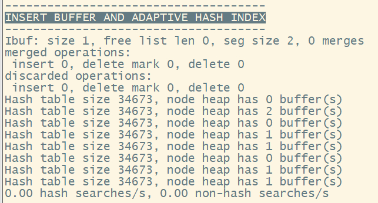

MySQL一揪到底
前言
汇总罗列MySQL点点滴滴
参考书籍
点点翻翻了下面这些，各有特点，各有所长属于是
- 《MySQL是怎样运行的 从根儿上理解MySQL》：白话“啰嗦”，但是容易理解
- 《MySQL技术内幕 InnoDB存储引擎 第2版 》：章节脉络很清楚，偏向InnoDB源码的，可作为补充看，非DBA不值得长时间深挖。
- 《高性能MySQL》：宝典，整体介绍全面，对MySQL整体脉络看的比较清楚
- 官网手册(5.7版本)：这没得说，最全的。PS：英语读的累的用Google Translate页面翻译，专业名词翻译的可读性较高。
2024年11月份更新
- 结合《MySQL技术内幕 InnoDB存储引擎》等书/官方文档作为细节知识点补充，完善本2年前的博客。
- 对原有知识重点部分加粗，补充若干图片辅助理解
- 删除部分废话
InnoDB特性
插入缓冲
这里面分为两个部分
Insert Buffe
Insert Buffer和数据页一样，也是物理页的一个组成部分。
InnoDB开创性设计了Insert Buffer，对于非聚集索引的插入或更新操作，不是每一次直接插入到索引页中，而是先判断插入的非聚集索引页是否在缓冲池中，若在，则直接插入；若不在，则先放入一个Insert Buffer对象中。
数据库这个非聚集的索引已经插到叶子节点，而实际并没有，只是存放在另一个位置。然后再以一定的频率和情况进行Insert Buffer和辅助索引叶子节点的merge操作，这时通常能将多个插入合并到一个操作中（因为在一个索引页中），这就大大提高了对于非聚集索引插入的性能。
Insert Buffer使用需要有两个条件：
- 索引是二级缩影
- 索引不是唯一的
可以通过show engin innodb status\G来查看当前InnoDB引擎状态，1
2
3
4
5
6
7
8
9
10
11
12
13
14
15
16
17-------------------------------------
INSERT BUFFER AND ADAPTIVE HASH INDEX
-------------------------------------
Ibuf: size 1, free list len 0, seg size 2, 0 merges
merged operations:
insert 0, delete mark 0, delete 0
discarded operations:
insert 0, delete mark 0, delete 0
Hash table size 34673, node heap has 0 buffer(s)
Hash table size 34673, node heap has 2 buffer(s)
Hash table size 34673, node heap has 0 buffer(s)
Hash table size 34673, node heap has 1 buffer(s)
Hash table size 34673, node heap has 1 buffer(s)
Hash table size 34673, node heap has 0 buffer(s)
Hash table size 34673, node heap has 1 buffer(s)
Hash table size 34673, node heap has 1 buffer(s)
0.00 hash searches/s, 0.00 non-hash searches/sChange Buffer
从InnoDB 1.0.x版本开始引入了Change Buffer，可以看作为是Insert Buffer的升级。对DML操作（I\D\U）都进行缓冲，分别细分为：Insert Buffer、Delete Buffer、Purge Buffer。
两次写（Double Write）
Insert Buffer带给InnoDB是性能上的提升，double write则是带给InnoDB的是数据页的可靠性。
在应用(apply)重做日志前，用户需要一个页的副本，当写入失效发生时，先通过页的副本来进行还原，再进行重做，这个就是Double Write。
自适应哈希索引（Adaptive Hash Index）
InnoDB会监控表上各个索引页的查询，如果观察到建立哈希索引可以带来速度提升，则建立哈希索引，这个就称之为自适应哈希索引。
具体的后文中有介绍。
异步IO（Async IO）
为了提高磁盘操作性能，当前的数据库系统都是采用异步IO的方式来处理磁盘操作，InnoDB也是如此。
刷新邻接页（Flush Neighbor Page）
其工作原理为：当刷新一个脏页时，InnoDB会检测该页所在区(extent)的所有页，如果时脏页，那么一起刷新。这样通过AIO可以将多个IO写入操作合并成一个IO操作，这个工作机制在传统机械磁盘有着显著优势，固态硬盘这个优势不明显。
从InnoDB 1.2.x版本开始，可以通过参数innodb_flush_neighbors来控制这个特性的开关。
InnoDB架构
补充一张5.7版本InnoDB的整体架构图
模块解释：
- 从整体上看（从os page cache分）：
- 上半部分是实例层，存放在内存里
- 下半部分是物理层，存放在文件系统中
- 从各个功能上看：
- master thread：负责调度其它各个线程，包含主循环（Loop）(1s和10s)、后台循环（Background Loop）、刷新循环（Flush Loop）、暂停循环（Suspend Loop）
- 1秒操作：
- 日志缓冲刷新到磁盘（会总是操作，即使事务还没有提交）
- 最多可能刷100个新脏页到磁盘
- 执行合并，改变插入缓冲的操作
- 若当前没有用户活动，可能切换到后台循环等
- 10秒操作：
- 刷新可能最多100个脏页到磁盘
- 合并至多5个Change Buffer（总是）
- 日志缓冲刷新到磁盘（总是）
- 删除无用的undo页（总是）
- 刷新100个或者10个脏页到磁盘（总是）产生一个检查点（总是）等
- 1秒操作：
- buf dump thread：负责把buffer pool中的内容dump到物理文件中，以便快速热加载。
- page cleaner thread：负责把buffer pool中的脏页刷新到磁盘（5.7版本后才有，之前都是交给主线程完成的）
- purge thread：负责将不再使用的undo日志进行回收
- read thread：处理用户的读请求，并负责将数据页从磁盘上读出来
- write thread：负责数据页从缓冲区写出到磁盘
- redo log thread：负责把日志缓冲中的内容刷新到redo log文件中
- Insert Buffer Thread：负责把insert buffer中的内容刷新到磁盘
- Buffer Pool内容：数据和索引页、undo页、insert buffer页、自适应哈希页、数据字典和锁信息
- Addtional Memory Pool：已经废弃
- redo log buffer：存储数据修改所产生的redo log
- double write buffer：双写所需要的
- master thread：负责调度其它各个线程，包含主循环（Loop）(1s和10s)、后台循环（Background Loop）、刷新循环（Flush Loop）、暂停循环（Suspend Loop）
InnoDB行记录存储结构

COMPACT行格式
有两大块组成：
- 记录的额外信息
- 边长字段长度列表
- NULL值列表
- 记录头信息
- 记录的真实数据
DYNAMIC行格式
跟COMPACT基本类似，只是在溢出页处存储的数据的不一样
InnoDB数据页结构
官方释义这种存放记录的页为索引（INDEX）页
结构一览

其中每个结构的功能如下图所示：
记录在页中的存储过程
在页的7 个组成部分中，我们自己存储的记录会按照指定的行格式存储到UserRecords 部分。在一开始生成页的时候，其实并没有UserRecords部分，每当插入一条记录时，都会从FreeSpace部分申请一个记录大小的控件，并将这个空间划分到UserRecords部分。当用完之后，就是需要新申请一个页继续存储。
记录头中的信息
先来一个存储示意图：
对照每个记录头属性含义：
结合UserRecords的一个存储示例示意图来仔细看看每个标志位的含义（省略了一些列）：
其中
- deleted_flag：只是用于标记当前记录是否是删除状态，真是数据行记录还是存储在这里。之所以不从磁盘上移除，是因为如果移除之后，还需要在磁盘上重新排列其它数据，频繁的删除的话，会极大的带来性能消耗。所有的删除记录会单独组成一个垃圾链表（这个过程牵扯到undo日志）
- min_rec_flag：B+树每层非叶子节点中的最小的目录项记录都会添加该标记。
- n_owned：用于标识当前页目录分组中所包含的行记录数量（包含两个头尾虚拟记录本身）。PS：这个过程具体看下一个小节，页目录创建过程。
- heap_no：看上面的Demo示意图，4条记录的heap_no分别是2、3、4、5，少了0和1。InnoDB在申请页空间初始化的时候，会创建两条伪记录（有的称之为虚拟记录）。一条代表页面中的最小记录（Infimum记录），另一条代表页面中的最大记录（Supremum记录）。
- 这两个记录的构造十分简单，都是由5字节大小的记录头信息和8字节大小的一个固定单词组成的（2组一共占用固定26字节）：

由于Infimum和Supremum这两条记录是InnoDB默认创建的记录，为了与用户记录区分，会单独存储，如下图所示：
- 如果在删除数据的时候，这个heap_no短时间内是不会变的。结合前面的deleted_flag标志位，当有新增数据来的时候，会复用当前这行记录的空间的。
- 这两个记录的构造十分简单，都是由5字节大小的记录头信息和8字节大小的一个固定单词组成的（2组一共占用固定26字节）：
- next_record：非常重要的一个属性，表示从当前记录的真实数据到下一条巨鹿的真实数据的距离。
- 如果为正数：说明当前记录的下一条记录在当前记录的后面；
- 如果为负数：说明当前记录的下一条记录在当前记录的前面。

这个设计，刚刚好向左就是记录头信息，向右读取就是真实数据。在某些场景下，可以使记录考前的字段和他们对应的字段长度信息在内存中靠的更近，这可能会提高缓存的命中率。


Page Directory(页目录-不确定)
本质上，先要知道设计目录页的目的：是为了解决在一个数据页中的记录（单向链表组成的）如何快速定位数据位置并访问。你就类比你去图书馆借书的流程，是不是先要去检索书录，完了找到对于书架，再去找对应编号所在范围，然后以此寻找直至找到对应的书，页目录的工作原理就是这样的。
先看一下页目录创建的大致流程：
- 将所有正常记录（包括Infimum和Supremum两个，但不包括已经移除到垃圾链表中的记录）划分几个组
- 每个组的最后一条记录的头信息中的n_owned属性表示该当前组内共有几条记录
- 将每个组中最后一条记录在页面中的地址偏移量（这个记录的真实数据与页面中第0个字节之间的距离）单独提取出来，按顺序存储到靠近页尾部的地方。这个地方就是Page Directory(页目录)。页目录中的这些地址偏移量称之为槽（slot），每个槽占用2字节。页目录就是由多个槽组成。
看个例子：
比如当前表有6条记录，InnoDB分成2组，第一组只有一条Infimum记录，第二组是剩余的5跳记录。2个组，就对应有俩个槽，每个槽中存放每个组中最大的那条记录在页面中的地址偏移量，如下图所示：
其中需要注意的是：
- 图中页目录俩槽里面的数字，就标识当前组的记录所在页中的地址偏移量。112就代表Supremum记录偏移112字节
- 两个n_owned值就分别代表当前分组的记录数量
此时我们简化一下，用箭头来示意一下，如下图所示：
分组依据
InnoDB对每个分组的记录条数是有规定的：对于Infimum记录所在的分组只能有1条记录，Supremum记录所在的分组拥有的记录条数只能在18条之间，剩下的分组记录条数范围只能是在48条之间。
PS：你可能问为什么要这样做？有说法是说跟概率学中的泊松分布有关。，具体不懂。。。
分组的步骤大致如下：
- 初始情况下，一个数据页中只有Infimum记录和Supremum记录2条，分别属于两个组，对于页目录中也只有2槽，分别代表Infimum记录和Spuremum记录在页面中的地址偏移量。
- 之后每插入一条记录，都会从页目录中找到对应记录的主键值比待插入记录的主键值大并且差值最小的槽(从本质上来说，槽是一个组内最大的那条记录在页面中的地址偏移量，通过槽可以快速找到对应的记录的主键值) .然后把该糟对应的记录的n_owned值加1，表示本组内又添加了一条记录， 直到该组中的记录数等于8个。
- 当一个组中的记录数等于8后，再插入一条记录时，会将组中的记录拆分成两个组，其中一个组中为4条记录，另一个是5条记录。这个拆分过程会在页目录中新增一个槽， 记录这个新增分组中最大的那条记录的偏移量。
在一个数据页中查找指定主键值的记录，过程分为两步：
- 通过二分法确定该记录所在分组对应的槽，然后找到该槽所在分组中主键值最小的那条记录。
- 通过记录的next record 属性遍历该槽所在的组中的各个记录。
Page Header(页头部-56字节)
存储在数据页中的记录的状态信息，如数据页中存放了多少条记录、Free Space在页面中的地址偏移量、页目录中存储了多少个槽等。
File Header(文件头-38字节)
存储各个类型的页信息（共有信息），其中就包含索引页（FIL_PAGE_INDEX），固定38字节
- FIL_PAGE_SPACE_OR_CHKSUM：页面校验和（跟文件尾中的保持对应）
- FIL_PAGE_OFFSET：就理解是每个页拥有的单独的页号
- FIL_PAGE_TYPE：当前页的类型。
- FIL_PAGE_PREV和FIL_PAGE_NEXT：数据页的前驱和后继指针，不同数据页是通过双向链表关联的。
页类型的分类：
| 类型名称 | 十六进制 | 描述 |
| ————- |:————-:|:————-:|
| FIL_PAGE_TYPE_ALLOCATED | 0x0000 | 最新分配，还未使用 |
| FIL_PAGE_UNDO_LOG | 0x0002 | undo日志页 |
| FIL_PAGE_INODE | 0x0003 | 存储段信息 |
| FIL_PAGE_IBUF_FREE_LIST | 0x0004 | Change Buffer空闲列表 |
| FIL_PAGE_IBUF_BITMAP | 0x0005 | Change Buffer的一些属性 |
| FIL_PAGE_TYPE_SYS | 0x0006 | 存储一些系统数据 |
| FIL_PAGE_TYPE_TRX_SYS | 0x0007 | 事务系统数据 |
| FIL_PAGE_TYPE_FSP_HDR | 0x0008 | 表空间头部信息 |
| FIL_PAGE_TYPE_XDES | 0x0009 | 存储区的一些属性 |
| FIL_PAGE_TYPE_BLOB | 0x000A | 溢出页 |
| FIL_PAGE_INDEX | 0x45BF | 索引页，也就是我们所说的数据页 |
File Trailer(文件尾-8字节)
这部分8字节组成，主要处理页一致性，前4字节代表页的校验和，后4字节代表页面被修改时对应的LSN的后4字节，正常情况下与File Header中的FIL_PAGE_LSN的后4字节相同。这部分也用来校验页的完整性
InnoDB的Buffer Pool
啥是Buffer Pool
在开始学习InnoDB存储结构的时候，我们就知道，MySQL的存储的数据按照数据页的方式存储到磁盘上的。但是，我们访问的时候，不可能时刻访问磁盘（效率巨低）。此时我们要改善访问过程怎么办呢？MySQL的设计者们，就通过引入缓存的概念，来优化从磁盘加载数据的过程。在MySQL中这部分缓存就称之为buffer Pool(缓冲池)。
在MySQL中默认的大小是128MB，可以通过查看系统变量查看：show variables like '%buffer_pool_size%';
Buffer Pool的组成
首先要知道，缓冲池是MySQL向操作系统内存申请的一块连续的内存存储空间（为啥要连续，翻看介绍InnoDB的存储结构的相关章节）。缓冲池中为每一个缓冲页（就是数据页，为了和正常的数据页区分，这里称之为缓冲页）都设置了一个控制块，每个控制块中包含了，如表空间编号、页号、缓冲页所在的缓冲池的地址、链表节点信息等等。对于的内存空间，看起来像下面这样：
中间的碎片就会，当加载好的缓冲页并为其分配好控制块信息之后，剩下来的空间，就是碎片信息。当然，也可能刚好就够了，没有碎片。
Free链表管理
先来想一个问题，现在要将磁盘中的数据页读到缓冲池中的缓冲页中去，我们怎么知道哪个缓冲页的是空闲的？这里使用到的是一个Free链表。我们假设当前这个Buffer Pool中可容纳的缓冲页的数量是n，那么增加了free链表（一个双向链表）的效果图，如下所示：
注意看这个双向链表，有个头节点，这里面存放了这个链表的收尾地址和节点数量等信息。注意这块节点存储，并不在缓冲池申请的内存区域中。
有了这个节点，读取存放的时候，就容易了，从头往后读，拿到空闲的缓冲页后，填上对应的控制块信息并从free链表中移除该节点，就表明这个缓冲页已经被使用了。
缓冲页的哈希表
大体上总结：通过建立表空间号+页号的Key，把缓冲页的控制块信息作为Value，建立一个哈希表，就可以快速访问了。
实际上就是：哈希索引（下文有详细说明）
flush链表的管理
如果我修改了缓冲池中的某个缓冲页的数据，如果此时数据还没回写到磁盘上，那么此时数据就与磁盘上的数据不一致了，这样的缓冲页也称之为脏页（dirty page）。当然，你说我更新完，立马回写到磁盘上行不行？行，但是这不又回到我们为啥要加缓冲区的问题上了么？所以，在围绕磁盘读写IO上，MySQL设计者们真的是下足了功夫。
这时候，如果我们不立马更新到磁盘上，那么后面如果要更新到磁盘上的时候，我们又怎么知道哪个页是脏页呢？
不得不新开一组链表来维护这些信息，而维护脏页的链表就称之为flush链表。结构就略了，跟上面的free链表一样的玩法。
等等，似乎还有一个问题，什么时候刷新？这个后面会介绍
LRU链表的管理
没错，正如这个小节标题所示，这个算法就是大学数据结构、操作系统等课程中提到的，最常用的一种页面置换算法，这不MySQL这里也用到了。
在介绍InnoDB是怎么用LRU算法之前，先考虑个最基本的问题，缓冲池大小是固定的，势必有用完的时候。用完之后，我们势必要考虑淘汰哪个页的问题，我们这里就用到一个LRU链表，来按最近最少使用的原则去淘汰缓冲页。
简单的LRU链表
正如上述所述，我们可以用一个简单的LRU链表来管理这些页，当需要访问某个页时，可以按照下面的方式处理LRU链表：
- 如果该页不在Buffer Pool中， 在把该页从磁盘加载到Buffer Pool中的缓冲页时，就把该缓冲页对应的控制块作为节点塞到LRU链表的头部；
- 如果该页已经被加载到Buffer Pool中， 则直接把该页对应的控制块移动到LRU链表的头部。
划分区域的LRU链表
这里又会有两个场景的问题： - MySQL预读功能（read ahead）会影响缓冲页的命中率，也就是预读进去的内容，不是我们访问所需的，那么势必又要从磁盘去加载。
- 一不小心全表扫描了，有非常多的使用频率偏低的页被同时加载到Buffer Pool中，会把那些使用频率非常高的页从BufferPool中淘汰。
针对这两种场景，InnoDB的设计者，则将LRU链表分成了下面两块区域： - 一部分存储使用频率非常高的缓冲页，这一部分链表也称为热数据，或者称之为young区域
- 另一部分存储使用频率不高的缓冲页，这部分链表也称为冷数据，或者称之为old区域。

InnoDB按照一定比例来划分这两个区域，默认情况下old区域占整个LRU链表的37%。可以通过innodb_old_blocks_pct来修改预读不被访问的优化
通过利用上面提到的两个链表的分区，把预读的放到old区域头部，这样如果不被访问，逐步淘汰也不影响热数据。全表扫描时的优化
在对某个处于old区域的缓冲页进行第一次访问的时候，就在它对应的控制块中记录这个访问时间。如果后续的访问时间与第一次访问的时间在某个时间间隔内，这个页面就不会从old区域移动到yongg区域的头部。这个时间间隔通过innodb_old_blocks_time控制。一些其它的优化
对于热数据区，InnoDB通过只有被访问的缓冲页位于young区域 1/4的后面的时候，才会被移动到LRU链表的头部。这样就可以降低调整LRU链表的频率。其它的一些链表
【了解】针对其它类型的数据页的时候延申出来的用于管理Buffer Pool的链表

刷新脏页到磁盘
了解一个原理两种形式：MySQL后台有专门负责的线程（可以翻到文章开始的那个InnoDB架构图，看看这个线程在哪里）每隔一段时间就把脏页刷新到磁盘，
刷新的方式主要有两种：
- 从LRU链表的冷数据中刷新一部分到磁盘
- 从flush链表中刷新一部分页面到磁盘
关于多个缓冲池
MySQL可以通过配置系统参数，来指定BufferPool的实例数，因为在多线程的访问环境下，如果只有单一的缓冲池，每次操作的时候，都要加锁处理，所以势必影响效率。
通过系统参数 innodb_buffer_pool_instances 来设置
InnoDB索引相关
整体上MySQL的索引总结：
- 从数据结构上来分：B+树索引、哈希索引、以及全文(FullText)索引和R-Tree索引（用于对GIS数据类型创建SPATIAL索引）
- 从物理存储角度：聚簇索引、非聚簇索引
- 从逻辑角度：主键索引、普通索引、或者单列索引、多列索引、唯一索引，非唯一索引
B+树索引
数据页组成的几个部分：
- 各个数据页组成一个双向链表
- 每个数据页中的记录按照主键值的从小到大的顺序组成一个单向链表

没有索引时的查找
在一个页中查找
这个好理解，要么按照有主键的方式查找，要么从Infimum从头遍历
在很多页中查找
分为两个步骤：
- 定位到记录所在的页
- 从所在的页内查找相应的记录
索引的目的时什么呢？就是优化第一个步骤的，即怎么快速定位到记录所在的页，会极大的影响查询速度。
索引
【备注】在书中，介绍这个索引的时候，先通过构建一个最简单的索引、再结合简单索引带来的问题，引出B+树的概念。这个介绍较为复杂的概念的时候，还是挺有意思的，循序渐进。
真正的用户数据存放在B+树的根节点（InnoDB中标记为第0层），其余层均为索引页，即在记录头中的record_type=1 目录项记录
聚簇索引（Clustered Index）
B+树索引的特点（这里不是介绍B+树数据结构的特定）：
- 使用记录主键值的大小进行记录和页的排序：
- 页的构成
- 各个存放用户记录的页也是根据页中用户记录的主键大小顺序排成一个双向链表
- 存放目录项的页分为不同层级，在同一层级中的页也是根据页中的目录项记录的主键大小顺序排成一个双向链表
- B+树的叶子节点存储的时完整的用户记录。
二级索引（Secondary Index）
聚簇索引的特定是：只能搜索条件是主键时才能发挥作用。如果遇到其它列查询条件，提升的办法就是按照指定列再建一个B+树索引（简单场景，实际要复杂）
这样的B+树索引与聚簇索引的不同：
- 使用指定列的大小记录进行记录和页的排序：
- 页：按照指定列的大小顺序排成一个单向链表
- 各个存放用户记录的页也是根据页中记录的指定列大小顺序排成一个双向链表
- 存放目录项记录的页分为不同的层级，在同一层级中的页也是根据页中目录项记录的指定列大小顺序排成一个双向链表.
- B+ 树的叶子节点存储的并不是完整的用户记录，而只是指定列+主键这两个列的值.
- 目录项记录中不再是主键+页号的搭配， 而变成了指定列+页号的搭配

这里牵扯到一个回表的概念：例如上图所示，我们在检索一个数据项（通过非主键查询）的时候，而最终的B+树节点存储的是指定列和主键信息，而完整的数据项信息，还要通过这个主键再去查询聚簇索引，这个过程就称之为回表。
为啥要回表？如果按照聚簇索引概念，B+树存放完整的数据页信息，那么意味着，每建立一个非主键索引，都要完整的存储一份数据页信息，这样的空间会非常大。
联合索引（Compound Index）
同时以多个列的大小作为排序规则，本质依旧是一个二级索引，只不过是按照多列的大小为排序规则，依次进行排序建立数据页。
InnoDB中B+树索引的注意事项
根页面固定
一个B+树索引的根节点自创建时，就不会再移动（页号不会再变化）
内节点中的目录项记录的唯一性
为了让新插入的记录能找到自己处于哪个页中，二级索引的内节点的目录项记录实际上有3个部分组成：
- 索引列的值
- 主键值
- 页号
一个页面至少容纳2条记录
MyISAM中的索引方案简介
MyISAM的索引是和数据分开存储的，如下图存储空间示意图所示：

使用MyISAM存储引擎的表会把索引信息单独存到另外一个文件中（称之为索引文件）。MyISAM会为表的主键单独创建一个索引，只不过再索引的叶子节点存储的不是完整的用户记录，而是主键值与行号的组合。也就是先通过索引找到对应的行号，再用行号去数据文件中找到完整的记录。
侧面说明，MyISAM查询都要进行一次回表操作，也就是说在MyISAM中建立的索引相当于全是二级索引！
书中一句总结：InnoDB中的“索引即数据，数据即索引”，而在MyISAM中确是“索引是索引，数据是数据”
自适应哈希索引
自适应哈希索引（Adaptive Hash Index, AHI）的诞生为了更快的对缓冲池中的B+数页进行查找，InnoDB会监控对表上各个索引页的查询，如果观察到建立哈希索引可以带来速度上的提升（热点索引），则建立哈希索引。
在InnoDB中使用哈希算法来对字典进行查找，其冲突机制采用链表的方式，哈希函数采用除法散列【h(k) = k mod m】的方式。
对于缓冲池页的哈希表来说，在缓冲池中的Page页都有一个chain指针，它指向相同哈希函数值的页。
而对于除法散列，m的取值略大于2倍的缓冲池页数量的质数。例如：当前innodb_buffer_pool_size的大小为10M，则共有640个16KB的页。对于缓冲池页内存的哈希表来说，就需要分配640 x 2 = 1280个hash槽，但是由于1280不是质数，需要取一个比1280略大的质数，应该就是1399，所以启动的时候会分配1399个槽的哈希表，用来哈希查询所在缓冲池中的页。
Hash索引问题
- 不支持范围索引查询，只能支持等值索引查询
InnoDB缓冲页查找下标
InnoDB的表空间都一个space_id，用户所要查询的应该是某个表空间的某个连续的16KB的页，即偏移量offset。InnoDB将space_id左移20位，然后加上这个space_id和offset，即关键字K=space_id<<20 + space_id + offset，然后再通过除法散列到各个槽中去查询。
如下图所示，我的服务器中的mysql的hash index状态：

InnoDB的全局索引
5.6版本之后InnoDB存储引擎开始支持全文索引，5.7版本之后通过使用ngram插件开始支持中文。之前仅支持英文，因为是通过空格作为分词的分隔符，对于中文来说是不合适的
MySQL允许在char、varchar、text类型上建立全文索引
TODO
B+树索引的使用
- 每个索引都对应一裸B+ 树. B+ 树分为好多层， 最下边一层是叶子节点，其余的是内节点。所有用户记录都存储在B+ 树的叶子节点， 所有目录项记录都存储在内节点。
- InnoDB 存储引擎会自动为主键建立聚簇索引(如果没有显式指定主键或者没有声明不允许
存储NUUL的UNIQUE 键，它会自动添加主键) ， 聚簇索引的叶子节点包含完整的用户记录。 - 我们可以为感兴趣的列建立二级索引，二级索引的叶子节点包含的用户记录由索引列和主键组成·如果想通过二级索引查找完整的用户记录，需要执行目表操作， 也就是在通过二级索引找到主键值之后，再到聚簇索引中查找完整的用户记录
- B+ 树中的每层节点都按照索引列的值从小到大的顺序排序组成了双向链表，而且每个页内的记录(无论是用户记录还是目录项记录)都按照索引列的值从小到大的顺序形成了一个单向链表。
如果是联合索引， 则页面和记录先按照索引列中前面的列的值排序: 如果该列的值相同，再按照索引列中后面的列的值排序。
比如， 我们对列c2 和c3建立了联合索引idx_c2_c3(c2，c3，那么该索引中的页面和记录就先按照c2 列的值进行排序;如果c2 列的值相同， 再按照c3 列的值排序.
贴一个图（注意看里面节点的排序规则）：
- 通过索引查找记录时，是从B+ 树的根节点开始一层一层向下搜索的.由于每个页面(无论是内节点页面还是叶子节点页面〉中的记录都划分成了若干个组， 每个组中索引列值最大的记录在页内的偏移量会被当作槽依次存放在页目录中(当然， 规定Supremum 记录比任何用户记录都大) ，因此可以在页目录中通过二分法快速定位到索引列等于某个值的记录.

索引使用的代价
- 空间代价：数据量庞大的表中，索引占据的存储空间是不容小觑的
- 时间上代价：
- B+树本身的维护，需要耗费性能，对页面进行分裂、回收动作等
- 如果多索引，往往你的查询语句可能需要跨索引查询，索引多了可能会导致成本分析时间过长，从而影响查询语句性能
应用B+树索引
这个章节其实就是阐述命中索引与索引命中失效的场景。这个章节里面，介绍了结果，细微的地方还是少了一点介绍，比如为什么 key1 like '%suf'形成的扫描区间是(-∞，+∞)呢？
关于全表扫描，这是一个非常可怕（性能角度）的方案，但是也是一种万能执行的方案，所有查询都能执行。
联合索引为什么会遵从最左原则？书中分析的几个联合索引查询的场景，其实有答案的，就是因为构成联合索引的B+树就是按照创建时从左到右的数据，来构建内节点的。
更好的创建和使用索引（三星索引）
三星索引是评判索引设计的一个比较好的准则：
- 索引将相关的记录放到一起则获得一星；
- 如果索引中的数据顺序和查找中的排列顺序一致则获得二星（排序星）
- 如果索引中的列包含了查询中需要的全部列则获得三星（宽索引星）
细分要点
- 只为用于搜索、排序或分组的列创建索引
- 考虑索引列中不重复值的格式
- 索引列的类型尽量小
- 为列前缀建立索引：【备注】这种确实还没怎么遇到过，不过是一种形式，字符串的前几位作为索引
- 覆盖索引：彻底减少回表带来的操作，可以在返回列中只包含索引列，这样就无需回表了。
- 让索引列以列名的形式在搜索条件中单独出现：这种就是索引失效的场景，结合最左原则
- 主键聚簇索引列一定要自增：很好理解，因为要排序，所以减少不必要的数据页的分配操作，自增
- 避免建立冗余索引
InnoDB逻辑存储结构
MySQL的数据目录
数据目录的结构
除了我们创建的数据库、表、视图和触发器等用户数据·除了这些用户数据，为了让程序更好地运行. MySQL 也会创建一些额外的数据。
数据库在文件系统中的表示
当我们新建一个数据库的时候，MySQL会帮我们做两件事：
- 在数据目录下创建一个与数据库名同名的子目录(或者说是文件夹)
- 在与该数据库名同名的子目录下创建一个名为
db.opt的文件.这个文件中包含了该数据库的一些属性，比如该数据库的字符集和比较规则。表在文件系统中的表示
每个表的信息可以分为两种： - 表结构定义
- 表中的数据
MySQL中定义了一个表名.frm的格式的文件，作为表结构的定义
关于数据，则在不同的存储引擎下，结构时不同的InnoDB如何存储表数据
InnoDB的设计者提出了表空间（table space）或者文件空间（file space）的概念。 - 系统表空间（system tablesapce）
这个系统表空间可以对应文件系统上一个或多个实际的文件。在默认情况下，lnnoDB 会在数据目录下创建一个名为ibdata1，大小为12MB 的文件，这个文件就是对应的系统表空间在文件系统上的表示。这个文件是自扩展文件，如果不够用时会自动扩展。 - 独立表空间（file-per-table tablespace）
在MySQL 5.6.6 以及之后的版本中，InnoDB 不再默认把各个袤的数据存储到系统表空间中，而是为每一个表建立一个独立表空间。也就是说，我们创建了多少个表，就有多少个独立表空间。在使用独立表空间来存储表数据时， 会在该表所属数据库对应的子目录下创建一个表示该独立表空间的文件，其文件名和表名相同，只不过添加了一个.ibd扩展名。 - 其它类型表空间
还有比如通用表空间（general tablesapce）、undo表空间（undo tablesapce）、临时表空间（temporary tablesapce）等MyISAM是如何存储表数据
结合之前的介绍，“索引是索引，数据是数据”的概念。MyISAM的分别对索引和数据创建了：.MYD和.MYI两个文件其它文件
还包含： - 服务器进程文件：每运行一个MySQL 服务器程序，都意味着启动一个进程. MySQL服务器会把自己的进程ID 写入到这个文件中。
- 服务器日志文件：服务器运行期间，会产生各种各样的日志，错误日志、二进制日志、redo 日志等。
- SSL 和RSA 证书与密钥文件：主要是为了客户端和服务器安全通信而创建的一些文件。
InnoDB的表空间
先来预览一下：
常用的页面类型（回顾）
InnoDB是以页为单位管理存储空间的。我们的聚簇索引（也就是完整的表数据）和其他的二级索引都是以B+树的形式保存到表空间中，而B+树的节点就是数据页。
所有类型数据页共有部分：File Header与File Trailer其中关于Header的：
独立表空间结构
InnoDB支持多种类型的表空间，我们重点关注独立表空间和系统表空间。
然而需要抓住一个主线：后面的一大堆乱七八糟的结构，都是为了一件事：尽可能的减少随机IO，但是又不想让数据量少的表浪费空间。
关于区（extent）
为了更好的管理页，InnoDB设计了区（extent）的概念
对于16KB的页来说，连续的64个页就是一个区(extent)，一个区默认占用1MB空间。
表空间被划分为许多连续的区，每个区默认由64个页组成，每256个区划分为一组，每个组的最开始的几个页面类型是固定的。
从结构定义上来看，为啥又要有区？
就是为了在物理位置上连续的64个页，来尽可能的减少随机I/O（机械磁盘的磁头重新定位，SSD的寻址）
关于段（segment）
问题：我们在使用B+数执行查询时知识在扫描叶子节点记录，如果不区分叶子节点和非叶子节点，统统把节点代表的页面放到申请的区里面，那么扫描跟从头到位扫描有啥区别？
在InnoDB中，为了区分B+树的叶子节点与非叶子节点的存储，存放叶子和非叶子节点的数据，称之为一个段。也就是说，一个索引会生成两个段，一个叶子节点段和一个非叶子节点段。
在这个过程中，如果对于较小的表，也严格用这套规则，势必会浪费空间。针对小表，提出碎片（fragment）的概念，一个碎片区中的页属于段A，有些属于段B，有些页甚至不属于任何段。碎片区直属于表空间， 并不属于任何一个段。
区的分类
区大致分为4中类型，或者说是4中状态（State），如下图所示：
分别释义为：
- 空闲的区：现在还没有用到这个区中的任何页面。
- 有剩余空闲页面的碎片区：表示碎片区中还有可被分配的空闲页面。
- 没有剩余空闲页面的碎片区：表示碎片区中的所有页面都被分配使用，没有空闲页面。
- 附属于某个段的区：我们知道，每一个索引都可以分为叶子节点段和非叶子节点段。除此之外，lnnoDB还会另外定义一些特殊用途的段，当这些段中的数据量很大时，将使用区作为基本的分配单位（也就是提级的道理），这些区中的页面完全用于存储该段中的数据(而碎片区可以存储属于不同段的数据).
【备注】MySQL怎样运行一书中提到了一个比喻，很形象（看过亮剑的肯定立马能懂bushi）：如果把表空间比作一个集团军，段就相当于师，区就相当于团。一般来说，团都是隶属于某个师，就像是处于FSEG 的区全都隶属于某个段；而处于FREE、FREE FRAG 以及FULL_FRAG 这3 种状态的区却直接隶属于表空间，就像独立团直接听命于军部一样。
关于XDES Entry结构
为了方便管理这些区，设计了一个XDES(Extent Descriptor) Entry的结构，结构示意图如下图所示：
每个段中的区对应的XDES Entry 结构建立了3 个链表：
- FREE链表：同一个段中， 所有页面都是空闲页面的区对应的XDES Entry 结构会被加入到这个链表中。注意， 这与直属于表空间的FREE 链袭区别开了，此处的FREE 链表是附属于某个段的链表。
- NOT FULL链表：同一个段中， 仍有空闲页面的区对应的XDES Entry结构会被加入到这个链表中。
- FULL链表：同一个段中，己经没有空闲页面的区对应的 XDES Entry 结构会被加入的这个链表中。
1 | create table t ( |
拿上面这个建表语句为例，表t共有两个索引：一个聚簇索引和一个二级索引。
- 所以这个表共有4个段（叶子节点和非叶子节点各一个），每个段都会维护上述的3个链表，总共12个链表。
- 再加上前文说到的3个直属于表空间的3个链表，
- 整个独立表空间共需要维护15个链表。
所以计算公式是：维护的XDES Entry链表个数 = 索引个数 * 2 * 3 + 3
链表基节点
前面的一大堆链表，怎么找到某个链表呢？为了解决快速寻找某个链表的头尾节点问题，设计了一个链表基节点的概念（List Base Node），结构示意图如下图所示：
段的结构
逻辑上的概念，由若干个零散的页面以及一些完整的区组成。定义了一个INODE Entry结构，示意图如下图所示：
各个类型页的存储的细节
对前面的各个逻辑概念底层到底存储在表空间什么地方做了一层详细的介绍
FSP_HDR类型
第一个组的第一个页面，也是表空间的第一个页面， 页号为0，结构示意图如下图所示：

组成的部分含义如下表所示：

其中：
- File Space Header部分：用于存储表空间的整体属性，如表空间ID、表空间拥有的页面数等。

- XDES Entry部分：紧挨着File Space Header部分的就是XDES Entry 部分了。XDES Entry 就存储在表空间的第一个页面中。一个XDES Entry 结构的大小是40 字节，由于一个页面的大小有限， 只能存放数量有限的XDES Entry 结构， 所以我们才把256 个区划分成一组。
XDES类型
与FSP_HDR类型非常相似，区别不同的是，无需记录表空间的整体属性，如下图所示：

IBUF_BITMAP类型
这种类型的页中记录一些有关Change Buffer的东西。一个对于Insert以及Update和Delete过程中，产生的随机IO问题，进行优化的一个方案。书中没有过多介绍，先知道有这么个结构，本质还是一棵B+树。
INODE类型
INODE类型的页就是为了存储INODE Entry结构存在的，结构示意图如下托所示：

INODE类型具体节点释义如下图所示：

其中List Node fro INODE Page List，这里面维护了两个链表，具体操作含义同前文中的INODE Entry中维护的3个链表节点类似：
- SEG_INODES_FULL:
- SEG_INODES_FREE:
而上面两个链表访问的基节点就是在前文中的FSP_HDR页类型中保存的，这样一来就可以快速访问了。
Segment Header结构的运用
一个索引产生两个段，分别是叶子节点段和非叶子节点段，而每个段都会对于一个INODE Entry结构。怎么知道某个段对应哪个INODE Entry结构呢？
PAGE_HEADR中（在前文提到InnoDB中关于数据页【INDEX类型的页】结构时提到的），如下图所示：

这两个类型都占用10字节，而这个两个结构中，都运用了一个叫Segment Header的结构，如下图所示：

其结构对于的描述信息如下图所示：

系统表空间
系统表空间与独立表空间类似，只不过整个MySQL进程只有一个系统表空间，用来存放一些有关整个系统相关联信息的，所以这个表空间的ID，即SpaceID=0，0号表空间。
系统表空间整体结构，如下图所示：
可以与前文独立表空间结构比较，发现前三个都是一致的，但是后面几个则是系统表空间所独有的：
除了这几个特有的页意外，extend1和extend2两个区，也就是页号从64~191的这128个页面称之为Doublewrite Buffer(双写缓冲区)。（MySQL的一大特性哦，这里登场了）此时就需要知道一点，这些特有的多数跟事务和多版本控制（MVCC）操作相关即可！细节在后续事务介绍中，还有详细的描述
InnoDB数据字典
再次回顾一下一条insert语句执行的过程：
- 首先，平时我们通过Insert向MySQL插入的记录称之为用户数据。但是，当我们向MySQL一个表中插入一条用户记录的时候，MySQL先要校验插入语句对应的表是否存在，以及插入的列和表中列是否符合，也就是语法校验的过程。
- 其次，如果语法校验没有问题，还需要知道表的聚簇索引和所有二级索引对于的根页面是哪个表空间和哪个页面
- 然后，再把记录插入到对应的B+树中
从上述过程就可以知道，除了维护各个B+树所需要的相关信息外，还要很多其他的信息才能运行。
保存的额外信息（主要）
- 某个表属于哪个表空间，表里面有多少列
- 表对应的每个列的类型是什么
- 该表有多少个索引，每个索引对应的列是哪几个字段，该索引对应的根页面在哪个表空间里面
- 该表有哪些外键，外键对应的表有哪些列
- 某个表空间对应的文件系统上的路径是什么
上述信息不仅仅是为了Insert而但是，只是为了更好的管理数据，而不得已存储的额外信息。因此，InnoDB的设计者们，额外的定义了一些列的系统内部表(internal system table)：

其中SYS_TABLES, SYS_COLUMNS, SYS_INDEXES, SYS_FIELDS尤为重要，称之为基本系统表（basic_system_tables），下面分别介绍相关信息：
- SYS_TABLES表
表相关的列如下：
SYS_TABLES表有两个索引：

- 以NAME为主键的聚簇索引
- 以ID列建立的二级索引
SYS_COLUMNS表

该表只有一个索引，即以(TABLE_ID,POS)为联合主键的聚簇索引SYS_INDEXES表

该表也只有一个索引，即以(TABLE_ID,ID)为联合主键的聚簇索引SYS_FIELDS表

该表只有一个索引，即以(INDEX_ID,POS)为联合主键的聚簇索引Data Dictionary Header页面
这个页面非常特殊，页号为7，类型为SYS的页面，这个页面记录的上述等几个表的数据字典信息，其结构如下：
可以看到这个页号有下面几个部分组成：


其中，比较特殊的是，Data Dictionary Header头部信息：
- Max Row ID: 列中隐藏row_id的值来源于这个全局共享的ROW_ID字段
- Max Index ID: 全局共享索引ID，每次新建一个索引时，就会将该字段加1
- Max Space ID: 道理同上
- Mix ID Low(unused)
- Root of SYS_TABLES clust index: 表示SYS_TABLES表聚簇索引页的根的页号
- Root of SYS_TABLES_IDS sec index: 表示SYS_TABLES表为ID建立的二级索引的根页面的页号
- Root of SYS_COLUMNS clust index: 表示SYS_COLUMNS表聚簇索引页的根的页号
- Root of SYS_INDEXES clust index: 表示SYS_INDEXES 表聚簇索引页的根的页号
- Root of SYS_FILEDS clust index: 表示SYS_FILEDS 表聚簇索引页的根的页号
- information_schema系统数据库
这里提供的系统数据库的表，仅仅是可以理解为，设计者为了方便后续排查底层问题时，开发的一个查询入口。真正的系统数据库表，还是那些个SYS类型的页。
InnoDB执行原理
单表访问方法
关于访问方法
MySQL设计者把MySQL 执行查询语句的方式称为访问方法(access methond) 或者访问类型
单表书中使用的演示表对应的DDL脚本如下：
1 | create table single_table ( |
书中示例插入1W条示例数据，建议读者自行插入，除了主键列外，随机生成。如需要，不妨参考如下一个简易的存储过程，入参就是插入表的条数：
1 | DELIMITER $$ |
const
通过主键或者唯一二级索引列来定位一条记录的访问方法定义为const (意思是常数级别的， 代价是可以忽略不计的) 。不过要达到const访问，却有些限制：
- 主键列
- 唯一二级索引与一个常量(【备注】书中写的是常数，个人觉得这个地方用常量表述更贴切，下同)进行比较
- 如果主键列和唯一索引是由多个列构成，则需要每个列都与常量比较时才有效（只有对多个列进行等值比较时，才能保证结果唯一，才能起效）
书中提到了一个特例，唯一索引与NULL比较，因为唯一索引列并不限制NULL值的数量，所以下述语句是可能有多条记录的，也就是不可以使用const访问方法来执行：
1 | select * from single_table where key2 is NULL; |
ref
有时候我们需要将一个普通的二级索引与常量进行比较，如下面的SQL所示：
1 | select * from single_table where key1 = 'abc'; |
对于这个查询，当然可以通过全表扫描的方式查询，不过也可以通过idx_key1的方式查询，此时的查询步骤可以解释为：
- 此时对于的扫描区间是：[‘abc’, ‘abc’]，这也是一个单点扫描区间。
- 可以定位到key1=’abc’的第一条记录
- 沿着记录的单向链表向后扫描，当某条记录不符合’abc’时为止
- 由于查询的返回列是全部，所以拿到二级索引记录对应的主键ID，再从聚簇索引回表查询拿到所有用户记录（实际进行的过程是，没命中一个记录，就会立即回表进行查询，而不是等待遍历完）
因为普通二级索引并不限制值的唯一，所以二级索引的遍历的效率完全取决于扫描区间中命中的记录数量。把这种搜索条件为二级索引列与常量进行得值比较，形成的扫描区间为单点扫描区间， 采用二级索引来执行查询的访问方法称为ref。
有两个特别的点需要了解：
- 由于二级索引（包含唯一索引）并不限制存储NULL的值，也就是如果通过
key IS NULL的形式进行检索的话，所以查询时最多到ref，而非const查询 - 对于索引列中包含多个列的二级索引来说，只要从索引最左列开始，进行与常量值比较时，就可以进行ref查询。反之，如下面语句：
1 | select * from single_table where key_part1 = 'god like' and key_part2 > 'legendary'; |
这样的查询则无法调用ref进行查询，而是后面提到的：range
ref_or_null
有时， 我们不仅想找出某个二级索引列的值等于某个常量的记录，而且还想把该列中值为NULL的记录也找出来。比如下面这个查询：
1 | select * from single_table where key1 = 'abc' or key1 is null; |
当使用二级索号|而不是全表扫描的方式执行该查询时，对应的扫描区间就是[NULL, NULL]以及[‘abc’， ‘abc’] ，此时执行这种类型的查询所使用的访问方法就称为ref_or_null。
为什么要单独加个这种操作呢？其实是因为列值为NULL的记录，会被存放在索引页的最左边。
range
有时候我们要进行复杂条件查询的时候，例如下面这个查询语句：
1 | select * from single_table where key2 in (1438, 6238) or (key2 >= 38 and key2 <= 79); |
如果仅使用idx_key2进行查询，那么此时的对应的扫描区间就是：[1438, 1438] 、[6328 ,6328] 以及[38 , 79]。此时则把**”使用索引执行查询时， 对应的扫描区间为若干个单点扫描区间或者范围扫描区间”的访问方法称为range**。有两种例外要记得：
- 仅包含一个单点扫描区间的访问方法不能称为range访问方法。要看实际情况，可能是const，也可能是ref
- 扫描区间为(-∞，+∞)的访问方法也不能称为range访问方法。
index
来看看比较有意思的两个查询场景：
1 | select key_part1,key_part2,key_part3 from single_table where key_part2='abc'; |
1 | select * from single_table where key_part2='abc'; |
这两个查询都有个特点，查询条件都是key_part2，该列虽然在二级索引idx_key_part中，但是由于不是最左列，所以无法形成合适的查询范围区间来减少扫描的数量，从而无法使用ref与range查询。但是，第一个查询有如下特点：
- 查询返回列只包含key_part1,key_part2,key_part3这三列，这三列刚好也都在idx_key_part索引中。
- 搜索条件中，只有key_part2，这列也刚好在该索引中。
这个查询过程，可以解释为：也就是说，我们可以直接遍历idx_key_part索引的所有二级索引记录， 针对获取到的每一条二级索引记录，都判断key_part2 = ‘abc’ 条件是否成立。如果成立，就从中读取出key_part1,key_part2,key_part3这3 个列的值并将它们发送给客户端。很显然， 在这种使用idx_key_part索引执行上述查询的情况下，对应的扫描区间就是(-∞ ， +∞ ) 。
但是要知道，虽然扫描区间是针对idx_key_part所有记录，但是遍历索引的代价是要比扫描全部聚簇索引的代价要小得多，MySQL的设计者，把这种遍历全部二级索引的方法称之为index查询。
【备注】注意，这里笔者贴了一个鲜明的反例，就是第二条查询语句，返回的是所有列，此时查询方法就有天壤之别。究其原因是，本身没有形成有效的查询范围，虽然遍历idx_key_part2全部索引，可以使用index查询。但是，要获取全部数据，所以必定要回表查询，这俩叠加，代价太大，就是性能最差的全表扫描了。不妨，再看看下面3中场景，查询方法又都分别对应什么呢？
1 | select key_part1 from single_table where key_part2 = 'abc'; |
关于index查询，还有个特例，当如果添加了”order by 主键“的条件，此时也会走index查询，如下语句所示：
1 | select * from single_table order by id; |
【备注】同样，主键我们知道，也会存在联合主键。如果变成联合主键，再添加order by，结果可能又该是什么呢？如果order by的列是联合主键的非最左列，又会怎样？建议你上手试试，巩固一下前面学习的知识。
all
这个没什么好说，就是我们老生常谈的全表扫描，对于InnoDB来说就是扫描全部的聚簇索引记录。
注意事项
二级索引+回表相关
在实际工作中，往往我们将会遇到查询条件需要多列场景的查询，如下面查询SQL示例：
1 | select * from single_table where key1='abc' and key2 > 1000; |
如果分别用这俩条件分析查询条件，很容易得到结果。但是实际情况，MySQL查询优化器会通过访问表中的少量数据或者直接根据事先生成的统计数据， 来计算[‘abc’ ,’abc’]扫描区间包含多少条记录，再计算(1000, +∞)扫描区间包含多少记录，再根据特定的算法来计算出这两个扫描区间的成本分别是多少。
一般来说， 等值查找比范围查找需要扫描的记录数更少(也就是ref 访问方法一般比range访问方法好； 但这并不总是成立， 也有可能在采用ref 方法访问时，相应的索引列为特定值的行数特别多)。假定，优化器最后决定使用idx_key1索引来执行查询，那么这个过程可以描述为下述步骤：
- 先通过idx_key1 对应的B+树定位到扫描区间[‘abc’ ,’abc’]中的第一条二级索引记录。
- 根据从步骤1中得到的二级索引记录的主键值执行回表操作， 得到完整的用户记录，再检测该记录是否满足key2> 1000 条件。如果满足则将其发送给客户端，否则将其忽略。
- 再根据该记录所在的单向链表找到下一条二级索引记录，重复步骤2中的操作，直到某条二级索引记录不满足key1 = ‘abc’ 条件为止。
关于MRR优化
MySQL中使用了一种名为Disk-Sweep Multi-Range Read(MRR, 多范围读取)的优化措施，来减少上述场景中的随机I/O开销（相比顺序IO性能很慢，基本上差2个数量级都有可能）。更多细节，请参考MySQL官方文档相关说明：
Multi-Range Read Optimization
传统的回表问题在于：二级索引所符合的记录数下的主键ID很大程度是随机的（即主键顺序是乱的），那么回表就会带来随机IO的压力。
这时候MMR优化概括的原理：先扫描一定量的二级索引，完了收集到这块的索引的主键ID后排序好，完了再到聚簇索引中检索。以此类推。MMR设计的初衷就是为了减少随机IO的产生。
MySQL中是通过变量： read_rnd_buffer_size 大小来控制MRR单次处理的范围数。默认：256KB
1 | -- 262144 256KB |
索引合并
MySQL 在” 一般情况下”只会为单个索引生成扫描区间，但还存在特殊情况. 在这些特殊情况下. MySQL 也可能为多个索引生成扫描区间。MySQL 设计者把这种使用多个索引来完成一次查询的执行方法称为index merge (索引合并）
Intersection索引合并
比如：
1 | select * from single_table where key1='a' and key3='b'; |
这个场景，优化器可能最后会用idx_key1，也可能会用idx_key3（【备注】如果只用其中一个索引，可以想一想最后会是什么方法执行，会是ref么？），当然也可能两者均使用，这时候就会遇到Intersection（交集）索引合并，从字面意义上就能看出来，选取最后的交集出结果，这个过程是这样的：
- 再使用idx_key1扫描区间[‘a’,’a’]的同时，使用idx_key3扫描区间[‘b’,’b’]的记录。
- 两者结果找出ID列相同的结果（共有的主键结果），再进行ID回表操作，最终返回查询结果。
通过上述过程，就可以少很多回表操作。
Union索引合并
从字面意义上，也可以理解，最终是取并集查询的。
比如下面一个查询场景：
1 | select * from single_table where key1='a' OR key3='b'; |
与Intersection不同的是，中间的条件是或了。这时候细节流程就会变成选取两个索引范围中的并集，并且将ID去重后，再进行回表操作。这样就会减少回表的代价。
再来看一个复杂一点的，这里就可以先进行交集合并和再进行并集合并查询：
1 | select * from single_table where (key_part1 = 'a' and key_part2 = 'b' and key_part3 = 'c') or (key1 = 'a' and key3 = 'b') |
值得注意的是，最后进行的是union(idx_key_part,idx_key1)，还是union(idx_key_part,idx_key3)，还是union(idx_key_part,intersection(idx_key1, idx_key3))这个就要看实际场景了。
sort-union索引合并
Union 索引合并的使用条件太苛刻，它必须保证从各个索引中扫描到的记录的主键值是有序的。因为要取并集还要去重，如果是乱序的话，并集后去重的代价还是不小的。
比如下面的语句：
1 | select * from single_table key1 <'a' or key3 > 'z'; |
这个时候，就无法直接用unoin合并，这时候可以这样操作：
- 先根据key1 <’a’ 条件从idx_key1 二级索引中获取二级索引记录，并将获取到的二级索引记录的主键进行排序。
- 再根据key3 > ‘z’ 条件从idx_key3 二级索引中获取二级索引记录，并将获取到的二级索引记录的主键值进行排序。
- 再根据上述排序好的记录，再进行Union合并操作即可。
针对这种先排序，后合并的场景，称之为sort-union合并。
【备注】这时候，不妨看看下面三种场景，可能最后的结果又是什么？会不会使用sort-union合并呢？如果你一下没有感觉，建议重新翻翻书本第7章的相关概念 :)
1 | explain select * from single_table where key1 > 'a' or key3 < 'z'; |
连接的原理
关于连接查询
宽泛的可以概括出，连接就是多张表，按照一定的匹配规则（连接条件，无条件的连接，就是笛卡尔积）形成的一个聚合的查询结果的过程。
本章节中涉及到的两个简单的示例表：
1 | -- t1表 |
连接过程的简介
【备注】书中从一个简单的连接查询开始作为入口，剖析了一下这个连接查询的过程，值得仔细研读。
先看一个简单的连接查询：
1 | select * from t1, t2 where t1.m1 > 1 and t1.m1 = t2.m2 and t2.n2 < 'd'; |
上面语句中涉及到了3个查询条件：
- t1.m1 > 1
- t1.m1 = t2.m2
- t2.n2 < ‘d’
这个连接查询的大致过程：
首先确定第一个需要查询的表， 这个表称为驱动表。怎么确定，其实就是在上面一章中单表查询的场景，在里面选取代价最小的进行查询即可。我们这里假设对t1表全表扫描，执行条件t1.m1>1的判断，取得满足条件的结果，我们假定满足的t1.m1的记录有2条，分别为：2，3。
步骤1中驱动表中得到的记录，都需要到t2表中查找匹配的记录，此时被查询的t2表也称之为被驱动表。查询条件中的：
t1.m1 = t2.m2就变成了t2.m2 = 2或者t2.m2 = 3，也就是，我们在被驱动表中查询的时候，查找满足下面的条件的记录即可：1
t2.m2 = 2 and t2.n2 < 'd' OR t2.m2 = 3 and t2.n2 < 'd'
我们可以清楚的看到，被驱动表可能是需要查询多次的。
当然这里只是为了拆解查询过程，实际肯定不是等着驱动表查询记录，然后再进行被驱动表的查询。实际是，驱动表的记录满足之后，会立即去被驱动表中查询满足条件的记录。
内连接和外连接
书本中在本小节和后续章节介绍中，使用到的两张表如下：
1 | create table student( |
针对上述流程，我们先考虑一个简单的场景：查询两张表学号相同的的成绩、科目信息，则可以是这样的查询语句：
1 | select s1.number,s1.name,s2.subject,s2.score from student s1, score s2 where s1.number = s2.number; |
查询结果是这样的：

但是，我们再仔细看一下，这里面只有两位同学有成绩，明明有三位同学，往往我们也需要查询出缺考的同学的成绩。这个需求的本质查询概念是这样的：针对驱动表中的每条记录，即使在被驱动表中没有找到与之匹配的记录，也仍然需要把该驱动表记录加入到结果集。为了解决这个问题，就有了内连接和外连接的概念。:
- 对于内连接的两个表，若驱动表中的记录在被驱动表中找不到匹配的记录，则该记录不会加入到最后的结果集。前面提到的连接都是内连接。
- 对于外连接的两个表，即使驱动表中的记录在被驱动表中没有匹配的记录，也仍然需要加入到结果集。
在MySQL中，根据驱动表的选取的不同，外连接可以分为两种：
- 左外连接：选取左侧的表作为驱动表
- 右外连接：选取右侧的表作为驱动表
但是，往往我们的实际场景，有时候要把外连接中的驱动表的一些数据返回，有时候又要过滤一些，这时候就要使用过滤条件了，而在外连接中不同的过滤条件效果是不一样的：
- where子句中的过滤条件：where子句中的过滤条件就是我们平时见的那种。不论是内连接还是外连接， 凡是不符
合WHERE子句中过滤条件的记录都不会被加入到最后的结果集。 - on子句中的过滤条件：对于外连接的驱动表中的记录来说，如果无法在被驱动表中找到匹配ON子句中过滤条件
的记录， 那么该驱动表记录仍然会被加入到结果集中，对应的被驱动表记录的各个字段使用NULL值填充。
需要注意的是：ON子句是传门为”外连接驱动表中的记录在被驱动表找不到匹配记录时，是否应该把该驱动表记录加入结果集中“这个场景提出的。所以，如果把ON子句放到内连接中，MySQL会把它像WHERE子句一样对待。也就是说，内连接中的WHERE子句和ON子句是等价的。
左(外)连接语法
1 | select * from t1 left [outer] join t2 on 连接条件 [where 普通过滤条件]; |
上述场景的连接查询语句就可以写成下面这样：
1 | select s1.number,s1.name,s2.subject,s2.score from student s1 left join score s2 on s1.number = s2.number; |
【备注】这个连接查询的细节就不用多说了，但是希望你注意，下面两种查询的边界条件是完全不一样的，要注意甄别on与where条件成立的时机：
1 | select s1.number,s1.name,s2.subject,s2.score from student s1 left join score s2 on s1.number = s2.number where s2.score > 80; |
右(外)连接语法
细节不用赘述，查询的驱动表从左边的表变为右边的表。
内连接语法
内连接和外连接的根本区别就是在驱动表中的记录不符合ON子句中的连接条件时，内连接不会把该记录加入到最后的结果集中。
其实在内连接中，最简单的语法是在FROM语句后面直接跟上多张表，但是MySQL为内连接提供了多种语法，以t1表、t2表为结果示例。
1 | select * from t1 [inner | cross] join t2 [on 连接条件] [where 普通过滤条件]; |
换句话说，也就是在MySQL中，下面三种写法是等价的：
- select * from t1 join t2;
- select * from t1 inner join t2;
- select * from t1 cross join t2;
连接的原理（内部实现）
嵌套循环连接
内连接的过程，我们可以概括为下面的两个步骤（重温）：
- 选取驱动表，使用与驱动表相关的过滤条件，选取代价最低的单表访问方法来执行对驱动表的单表查询。
- 对上述步骤，查询驱动表得到的结果集中的每一条记录，都分别到被驱动表中查找匹配的记录。
【备注】书中贴了一个大图，值得仔细看一下

如果有3个表，那么上述过程查询的结果集作为新的驱动表，再与第3张表一起，重复上面的过程。其余以此类推。
这个过程就像是一个嵌套的循环，所以这种” 驱动表只访问一次，但被驱动表却可能访问多次，且访问次数取决于对驱动表执行单表查询后的结果集中有多少条记录”的连接执行方式称为嵌套循环连接（Nested-Loop Join），这是最简单也是最笨拙的一种连接查询算法。
使用索引加快连接速度
【备注】这个过程记住两点：1. 连接查询的条件，如果是索引，是可以加快检索的速度的；2. 连接查询的时候，尽量不要返回所有列，如果能返回索引列就能解决问题，就返回这些信息。这两点步骤的拆解过程，参考关于单表访问过程中的命中过程。
基于块的嵌套循环连接
在前面的嵌套循环示例中，仅仅几条这个是很简单的。但是如果当表数据量成千上万的时候，势必会牵扯到反复访问磁盘的过程。我们是否可以在把被驱动表中的记录加载到内存时，一次性地与驱动表中的多条记录进行匹配呢？这样就可以大大减少重复从磁盘上加载被驱动表的代价了。提出了一个名为Join Buffer (连接缓冲区）的概念。
在执行连接查询前申请的一块固定大小的内存，先把若干条驱动表结果集中的记录装在这个Join Buffer中，然后开始扫描被驱动表，每一条被驱动表的记录一次性地与Join Buffer中的多条驱动表记录进行匹配。由于匹配动作都是在内存中完成，所以大大减少磁盘IO访问的过程。
设计者，把这种基于连接缓冲区的嵌套循环连接称之为 ，基于块的嵌套循环连接(Block Nested-Loop Join ) 算法。
基于成本优化
什么是成本？
一条查询语句的成本在MySQL中的体现是由两个方面组成的：
- I/O成本：我们的表经常使用的MyISAM 、InnoDB 存储引擎都是将数据和索引存储到磁盘上。当查询表中的记录时，需要先把数据或者索引加载到内存中，然后再进行操作。这个从磁盘到内存的加载过程损耗的时间称为I/O成本。
- CPU成本：读取记录以及检测记录是否满足对应的搜索条件、对结果集进行排序等这些操作损耗的时间称为CPU 成本。
这里面先要知道两个默认的正对InnoDB存储引擎的成本常数：
- 读取一个页面花费的IO成本系数默认是1.0：*页面数 * 1.0 + 1.1(微调系数)*
- 读取以及检测一条记录是否符合搜索条件的CPU成本系数默认是0.2：*记录数 * 0.2 + 1.0(微调系数)*
举例
单表查询成本
这里的使用的示例的表，还是前面涉及的single_table。
基于成本的优化步骤
MySQL的优化器会找出所有可以用来执行该语句的方案，并在对比这些方案之后找出成本最低的方案。这个成本最低的方案就是所谓的执行计划。之后才会调用存储引擎提供的接口真正地执行查，这个过程总结一下就是下面这样：
- 根据搜索条件，找出所有可能使用的索引。
- 计算全表扫描的代价
- 计算使用不同索引执行查询的代价
- 对比各种执行方案的代价，找出成本最低的那个方案。
先从一个稍微复杂一点的单表查询语句来说说优化步骤：
1 | select * from single_table where |
第一步：根据搜索条件，找出所有可能使用的索引。
再看看，对于B+树索引来说，只要索引列和常数使用：**=、<=>、IN、NOT IN、IS NULL、IS NOT NULL、>、<、>=、<=、BETWEEN 、! = (不等于也可以写成<>)或者LIKE操作符连接起来，就会产生一个扫描区间（用LIKE匹配字符串前缀时，也会产生一个扫描区间）。也就是说，这些条件是都有可能使用到索引的，把一个查询中可能使用到的索引称之为possible keys**。
来分析分析上述语句中可能使用到索引的场景：
- key1 IN (‘a’, ‘b’, ‘c’)**：可以使用索引idx_key1**。
- key2 > 10 AND key2 < 1000：可以使用二级索引uk_key2。
- key3 > key2：不能形成有效的查询区间，不能使用索引。
- **key_part1 like ‘%hello%’**：没有通过前缀匹配，不能形成有效的查询区间，不能使用索引。
- **common_feild = ‘123’**：压根既不是索引列，索引不能使用索引。
综上能使用到的索引，就是：idx_key1 和 uk_key2。
第二步：计算全表扫描的代价
一：MySQL提供了一个查看表状态信息的方法：show table status，如下面信息所示：
1 | mysql> show table status like 'single_table'\G |
在计算全表信息的时候，会用到这个状态信息中的两个字段：
Rows：表中记录的条数。对于MyISAM是准确值，而对于InnoDB来说是一个估计值。我自己建的表中的记录数是9999条，这里是10167。
Data_length：表占用的存储字节数。对于MyISAM也是准确值，而对于InnoDB该值相当于聚簇索引存储空间大小，也及由此可以算出聚簇索引的页面数量。
~~ Data_length = 聚簇索引的页面数量 * 每个页面大小 ~~
~~ 在计算全表扫描的成本的时候，就会用到上面两个值外加上一点附加值最后得出一个最终成本数值。 ~~
结合上文提到的计算公式：Data_length=1589248字节，换算页大小：1589248/16/1024 = 97页
IO成本：97 * 1.0 + 1.1 = 98.1
CPU成本：10167(rows) * 0.2 + 1.0 = 2034.4
最后合计（两成本相加）：98.1 + 2034.4 = 2132.5，这个就是上面表数据计算出来的全表扫描cost成本
PS：2年前的原始表数据已经丢失，这里没办法贴一个trace结果。
第三步：计算使用不同索引执行查询的代价
这个过程，整体可以分为，先从唯一二级索引，再到普通二级索引计算。中间也会涉及，记录数，回表数等相关计算。以及会包括是否需要索引合并的场景。
普通二级索引的计算公式如下：
- IO成本：区间/等值条件数 * 1.0
- CPU成本：估算记录数（通过估算页平均记录数和估算页数量乘积） * 0.2 + 0.01(微调系数)
- 回表成本（一条记录等于一个页数量）：
- IO成本：记录数 * 1.0
- CPU成本：记录数 * 0.2（索引比较的时候，这个成本不计算在内；但是最终决策的时候，会纳入计算）
基于索引统计数据的成本计算
有时候在使用索引查询数据的时候，会形成很多单点扫描区间，例如使用IN查询，就会产生。例如下面这个场景：
1 | select * from single_table where key1 in ('a', 'b', 'c', ..., 'azz3'); |
由于idx_key1并不是唯一索引，所以这么多单点区间并不能确定到底有多少条记录。而针对众多单点扫描区间的记录来说，往往是通过扫描B+树的区间的最左记录和区间最右记录，然后再通过这两条记录之间有多少记录（少的时候，可以精确算，记录多的时候只能估算）。而，这种通过二级索引的区间范围来计算某个扫描区间内的记录数的方法，称之为index dive。
这里也有个问题，就是什么时候使用index dive来计算？加入单点区间很多很多，都通过index dive很显然不现实。所以，MySQL是通过一个系统参数来设定阈值的，你可以通过如下的查询语句来查看这个参数值，默认是200。
1 | mysql> show variables like '%dive%'; |
如果超过这个阈值，则需要通过系统索引统计数据来进行估算。可以通过：**show index from [表名]**，来查询这些统计数据，如下所示，就是我在我本地机器的统计结果信息：

每个列的具体含义，如下图所示：
那么上文中提到的通过索引统计数据来估算记录数是怎么做的呢？用到上述结果中的两个值：
- 使用SHOW TABLE STATUS 语句显示出来的Rows值：
- 使用SHOW INDEX 语句显示出来的Cardinality属性：
一个值的重复次数大约等于Rows除以Cardinality值，用我们上述的示例，就是：10167 / 9999 ≈ 1条，也就是单点区间只有1条记录。假如上面的IN查询语句形成的单点区间有20000个，那么最后的记录数估算就是：20000 * 1(上述算的的重复个数) = 20000条记录。虽然简单，但是由于选取的两个数据本来就是不准的，所以这种场景实际执行效率可能并不是这样的。
连接查询的成本
条件过滤（condition filtering）
对于两张表的连接查询来说，它的查询成本由两个部分组成：
- 单词查询驱动表的成本
- 多次查询被驱动表的成本
我们把查询驱动表后得到的记录称之为驱动表的扇出（fanout）(【备注】在MySQL 8中对这块有巨大的提升优化：https://dev.mysql.com/doc/refman/8.0/en/performance-schema-events-waits-current-table.html)。
在实际查询过程中，往往会通过关联条件的过程中，进行数据量猜测**，把这个猜测的过程称之为条件过滤(Condition Filtering)**。这个过程可能使用到索引、也可能使用到统计数据等等。
【备注】书中有提到这个猜测的规则，叫启发式(heuristic)规则。这项优化技术，似乎在多表查询中均有涉及。有兴趣的可以看看这本书籍中的介绍：https://apprize.best/data/mysql/14.html
两表连接成本分析
连接查询的总成本计算公式是这样的：
*连接查询总成本 = 单词访问驱动表的成本 + 驱动表扇出值 * 单次访问被驱动表的成本*
InnoDB统计数据是如何收集的
统计数据的存储方式
知道一件事：InnoDB针对统计数据提供了两种存储方式：永久性存储统计数据和非永久性地存储统计数据。提供了系统变量：innodb_stats_persistent来控制。
innodb_table_status

innodb_index_status

基于规则的优化
子查询形式
一般子查询有两种展现形式：
- 一种在SELECT子句中
- 一种在FROM子句中：这种往往在FROM后面会带上子查询的别名，这种别名也称之为派生表
- 在WHERE或ON子句的表达式中
子查询的过程
TODO
EXPLAIN详解
【备注】explain是在我们工作中经常要关注的一个工具，为了写出更高效的语句，通常往往要借助MySQL的explain工具进行语句分析，看看执行器是不是高效的运作了。

执行计划输出中的各列详解
table
EXPLALN语句输出的每条记录都对应着某个单表的访问方法， 该条记录的table列代表该表的表名。
id
查询语句中每出现一个SELECT关键字， 设计MySQL的大叔就会为它分配一个唯一的地值， 这个id值就是EXPLAN时输出的第一列。
普通连接查询中，即使有多个select，ID分配的也是相同的。但是如果包含子查询的场景，则会内外顺序进行区分，例如下面查询：
1 | mysql> explain select * from single_table where key1 in (select key1 from single_table2) or key3 = 'a'; |
select_type

分别都来看看每个类型的含义：
- SIMPLE：查询语句中不包含UNION 或者子查询的查询都算作SIMPLE类型；连接查询的select_type也是SIMPLE。
- PRIMARY：对于包含UNION 、UNION ALL或者子查询的大查询来说，它是由几个小查询组成的，其中最左边那个查询的select_type 值就是PRlMARY。
- UNION：对于包含UNION 或者UNION ALL的大查询来说，它是由几个小查询组成的；其中除了最左边的那个小查询以外，其余小查询的select_type值就是UNION。
- UNION RESULT：MySQL选择使用临时表来完成UNION查询的去重工作，针对该临时表的查询的select_type就是UNION RESULT。
- SUBQUERY：如果包含子查询的查询语句不能够转为对应的半连接形式，并且该子查询是不相关子查询，而且查询优化器决定采用将该子查询物化的方案来执行该子查询时，该子查询的第一个SELECT关键字代表的那个查询的select_type就是SUBQUERY。
- DEPENDANENT SUBQUERY：如果包含子查询的查询语句不能够转为对应的半连接形式， 并且该子查询被查询优化器转换为相关子查询的形式，则该子查询的第一个SELECT关键字代表的那个查询的select_type就是DEPENDENT SUBQUERY。
- DEPENDANENT UNION：在包含UNION 或者UNION ALL 的大查询中，如果各个小查询部依赖于外层查询，则除了最左边的那个小查询之外，其余小查询的select_type 的值就是DEPENDENT UNlON。
- DERIVED：包含派生表的查询中，如果是以物化派生表的方式执行查询。
- MATERIALIZED：当查询优化器在执行包含子查询的语句时，选择将予查询物化之后与外层查询进行连接查询。
partitions
这个mysql的分区表的含义，标记的是分区表的编号，即这个查询扫描过的分区表
type
单表的查询方式，前面也有提到过一些。完整的有：system 、const、eq_ref、ref、fulltext、ref_or_null 、index_range 、index_subquery、range、index、ALL。
- system：当表中只有一条记录并且该表使用的存储引攀(比如MyISAM 、MEMORY )的统计数据是精确的， 那么对该表的访问方法就是system。当然如果换成InnoDB，即使就是一条记录，这个也是会成ALL的。
- const：根据主键或者唯一索引列与常量进行等值匹配的时候
- eq_ref：执行连接查询时，如果被驱动表是通过主键或者不允许存储NULL值的唯一二级索引列等值匹配的方式进行访问的(如果该主键或者不允许存储NULL值的唯一二级索引是联合索引，则所有的索引列都必须进行等值比较) ，则对该被驱动袤的访问方法就是eq_ref。
- ref：当通过普通的二级索引列与常值进行等值匹配的方式来查询某个表时
- fulltext：全文索引
- ref_or_null：当对普通二二级索引列进行等值匹配且该索引列的值也可以是NULL 值时
- index_range：一般情况下只会为单个索引生成扫描区间
- unique_subquery：类似于两表连接中被驱动表的eq_ref访问方法，unique_subquery针对的是一些包含肘子查询的查询语句。如果查询优化器决定将IN子查询转换为EXISTS子查询， 而且子查询在转换之后可以使用主键或者不允许存储NULL值的唯一二级索引进行等值匹配。如下面执行所示：
1 | mysql> explain select * from single_table s1 where common_feild in (select id from single_table2 s2 where s1.common_feild = s2.common_feild) or s1.key3 = 'a'; |
- index_subquery：与unique_subquery类似，只不过访问子查询中的表时使用的时普通的索引。
- range：如果使用泵’引获取某些单点扫描区间的记录，那么就可能使用到range访问方法。
- index：当可以使用索引覆盖，但需要扫描全部的索引记录时。通常往往出现在联合索引中，返回列是联合索引中的一列，查询条件也是联合索引中的一列，但是查询条件不能形成有效的扫描区间，所以只能全量扫描索引了。
- ALL：全表扫描
possible_key和key
possible keys 列表示在某个查询语句中，对某个表执行单表查询的时候可能用到的索引有哪些；key则表示实际用到的索引。
key_len
例如下面这个语句：
1 | explain select * from single_table s1 where s1.key1 > 'a' and s1.key1 < 'b'; |
执行计划是这样的：

根据我们经验得出，这个扫描区间就是(‘a’, ‘b’)，有时候我们想通过执行计划判断出形成的扫描区间是什么，此时key_len字段就有用处了。MySQL的设计者们，为边界条件中包含的列位于了一个key_len的值，我们看到上述语句的key_len是303，303是怎么来的呢？
对于key_len值，是由下面3个部分组成的：
- 该列的实际数据最多占用的存储空间的长度。对于固定的长度的，如INT的，就是4个字节；对于变长的，例如varchar(100)，在UTF8字符集下最多就是300字节，而在utf8mb4下，就是400.
- 如果该列可以存储NULL值，则key_len在上述基础之上再加1。
- 对于变长类型的列来说，都会有2个字节的空间来存储该变列的实际数据占用的存储空间长度，key_len的值在原先的基础上还要加2。（【备注】如果对这个有疑问的，看看前面的存储结构）
所以上面我们执行的语句的执行计划的key_len是303是这么来的：key_len = 100 * 3 + 1 + 2
ref
当访问方法是const、eq_ref、ref、ref_or_null 、unique_subquery、index_ subquery 中的其中一个时， ref列展示的就是与索引列进行等值匹配的东西是啥。
rows
在查询优化器决定使用全表扫描的方式对某个表执行查询时，执行计划的rows列就代表该表的估计行数.如果使用索引来执行查询，执行计划的rows列就代表预计扫描的索引记录数。
filtered
一句话概括，可以用于来评估当前表执行计划中，总共命中扫描数(rows) 与 其余查询条件估计范围(filtered)可以预测出最终结果数。例如下面的查询语句：
1 | mysql> explain select * from single_table inner join single_table2 on single_table.key1 = single_table2.key1 where single_table.common_feild = 'a'; |
分析一下就是：以single_table为驱动表，用的是idx_key1索引，满足条件的记录是10167条。而filtered就是满足其余条件（这里指common_feild=’a’）所占的比例，这里是10%。就意味着，10167条数据中有10%的记录满足common_feild='a'。
extra
顾名思义， Extra 列是用来说明一些额外信息的， 我们可以通过这些额外信息来更准确地理解MySQL到底如何执行给定的查询语句。
optimizer trace的神奇功效
【备注】这张值得仔细研究，往往你通过explain分析了SQL语句的执行计划，只知其一，但是你并不一定了解其中为什么这么选择了。经验丰富的老手，可能会通过以往的经验，告诉你为什么这里用了这个索引，为什么没有命中，为什么效率比较差什么的。但是，通常情况下，要怎么来分析呢？MySQL（特别注意：5.6版本以后才有这个功能）提供了一个非常有意思的机制，就是optimizer trace。通过这个玩意儿，你就能很清楚的值得，优化器优化执行的步骤是怎样的。所以，在研究学习阶段，建议你可以把这个功能打开，完了仔细研究学习一哈。
关于optimizer trace
通过如下语句可以看当前MySQL的optimizer trace的配置
1 | mysql> show variables like 'optimizer_trace'; |
默认情况下enabled=off，也就是关闭的。one_line就算了，结果一行输出，我们又不是程序，一行太难看了。
通过:
1 | set optimizer_trace = 'enabled=on'; |
来打开这个功能。
optimizer trace表分别有4列：
- query：输入的查询语句
- trace：优化过程的JSON格式文本
- missing_bytes_beyond_max_mem_size：在执行计划的生成过程中可能会输出很多内容，如果超过某个限制，多余的文本将不会显示。
- insufficient_privileges：表示是否有权限查看执行计划的生成过程， 默认值是0. 表示有权限查看执行计划的生成过程；只有某些特殊情况下，它的值才是1 .我们暂时不关心这个字段的值。
使用optimizer trace的过程
- 打开optimizer trace：打开方式上文介绍了
- 输入自己的查询语句（也可以是执行计划）
- 从optimizer_trace表中查看上一个查询的过程优化：
1
select * from information_schema.optimizer_trace；
- 可能还要观察其他语句执行的优化过程：重复2、3两步。
- 当停止查看语句的优化过程时，把optimizer_trace功能关闭
这里贴一个示例SQL，供后续分析使用：1
2
3
4
5select * from single_table where
key1 > 'a' and
key2 < 1000000 and
key3 in ('a', 'b', 'c') and
common_feild = 'abc';
【备注】如果是随机插入字符串的，按照这个条件改造几条数据。
分析过程
【备注】这个过程会很长，请耐心看看，建议你直接copy到一个JSON格式化工具中，方便查看。下述步骤，结合书中的介绍，以及自己的造的数据相关，在你的数据库中，可能执行结果并不是这样，这个要具体场景具体分析，理解其中的步骤含义即可。
注意：如果你要自己执行，通过命令行的方式连接到你的MySQL服务器上执行，我在我windows机器上，用的社区版的MySQL安装大礼包中，自带的MySQL 5.7 Command Line Client执行的（本质就是命令行，就是省去了第一步的连接过程，运行输入个密码就行了）
1 | { |
后面还有两列，分别都是0，说明一：没有因为优化过程文本太多而丢弃的文本。说明二：权限字段也是0，这部分就略去不展示了。
虽然很多，但是还是非常有规律可循的，我们来总结一下：
- prepare阶段
- optimize阶段
- execute阶段
而对于单表查询阶段：主要关注的是optimize阶段的row_estimation过程
对于多表连接查询来说：我们主要关注的是considered_execution_plans过程
InnoDB事务相关
事务简介
事务的概念
事务的4个特性：A（Atomicity）、C（Consistency）、I（Isolation）、D（Durability）
- 原子性：
- 一致性：
- 隔离性：
- 持久性：
为了把需要这个四个特性的一个或者多个数据库操作称之为事务（transaction）
根据这些操作所执行的不同阶段把事务大致划分成下面几个状态：
- 活动的(active)**：事务对应的数据库操作正在执行过程中时，我们就说该事务处于活动的状态**。
- 部分提交的（partially committed）：当事务中的最后一个操作执行完成，但由于操作都在内存中执行，所造成的影响并没有刷新到磁盘时，我们就说该事务处于部分提交的状态。
- 失败的（failed）：当事务处于活动的状态或者部分提交的状态时，可能遇到了某些错误(数据库自身的错误、操作系统错误或者直接断电等）而无法继续执行， 或者入为停止了当前事务的执行， 我们就说该事务处于失败的状态。
- 中止的（aborted）：如果事务执行了半截而变为失败的状态，需要撤销失败事务对当前数据库造成的影响，也就是回滚操作。当回滚操作执行完毕后，也就是数据库恢复到了执行事务之前的状态，我们就说该事务处于中止的状态。
- 提交的（committed）：当一个处于部分提交的状态的事务将修改过的数据都刷新到磁盘中之后，我们就可以说该事务处于提交的状态。

MySQL中的事务表现
【备注】先要明白一点，目前只有InnoDB和NDB（分布式），这两种存储引擎，才支持事务。
在InnoDB中，知道几种语法，一般我们很少直接通过手工命令方式来执行事务，在正常业务代码中，都会通过数据库连接中间件来统一管理事务。

redo日志
redo日志概念
【备注】关于redo日志概念部分很好理解，在缓冲池那节，我们提到过，在更新了缓冲页还没有刷新磁盘的时候，如果出现问题，这个中间过程是可能会导致数据不一致的。再来上节中提到的事务操作，我们怎么保证持久性，即使碰到数据库崩溃的场景，我们依旧能恢复崩溃前的状态？
MySQL的设计者们，通过一种类似于记录操作流水的方式来做的持久性的。
因为在系统因崩溃而重启时严要按照上述内容所记录的步骤重新更新数据页，所以上述内容也称为重做日志(redo log) 。
记住redo log的两个特点：
- redo日志占用空间非常小
- redo日志顺序写入磁盘的：在执行事务的过程中，每执行一条语句，就可能产生若干条redo日志，这些日志是顺序写入磁盘的。
redo日志格式

其中： - type：redo日志类型
- spaceID：表空间ID
- page number：页号
- data：这条redo日志的具体内容

undo日志
事务的原子性告诉我们，要么做，要么统一不做，所以每当要对一条记录进行修改的时候（insert、delete、update）：
- 在插入一条记录时，至少要把这条记录的主键值记下来，这样之后回滚时只需要把这个主键值对应的记录删掉就好了;
- 在删除一条记录时，至少要把这条记录中的内容都记下来，这样之后回滚时再把由这些内容组成的记录插入到表中就好了。
- 在修改一条记录时，至少要把被更新的列的旧值记下来，这样之后回滚时再把这些列更新为旧值就好了。
这些为了回滚而记录的东西称为撤销日志(undo log)，称之为undo日志。事务ID
一个事务剋以是一个只读事务，也可以是一个读写事务。
只有在事务对表中的记录进待改动（增删改）时才会为这个事务分配一个唯一的事务id。事务ID的生成
与隐藏列row_id基本类似： - 服务器会在内存中维护一个全局变量，每当需要为某个事务分配事务id时，就会把变量的值当作事务id分配给该事务，并且把变量自增1。
- 每当这个变量的值为256的倍数时，就会将该变量的值刷新到系统表空间中页号为5的页面中一个名为Max_Trx_ID的属性中，这个属性占用8字节存储空间。
- 当系统下一次重新启动时，会将这个属性加载到内存中，将该值加上256之后赋值给前面提到的全局变量（加值的原因是上次关机时，该全局变量的值可能大于磁盘页面中的Max Trx ID属性）。
trx_id隐藏列
InnoDB记录行格式的时候，聚簇索引的记录会完整保存用户数据以外，还会自动添加名为trx_id、roll_pointer的隐藏列。
trx_id就是对聚簇索引记录进行改动的语句所在的事务对应的事务id。
roll_pointer：是指向一条undo日志地址的指针，由7个字节组成，共包含4个属性
undo日志格式
不同的操作日志格式是不一样的
TODO

事务隔离级别和MVCC
虽然数据库管理系统可以通过redo日志、undo日志这些手段来保证事务的原子性。但是，如果出现了并发场景，即不同的客户端、不同时间前后分别对同一数据主题进行操作，就可能带来问题。
比如，A账户向B账户前后发起了两笔转账，这两笔事务操作，假设称之为T1、T2。起始账户A有11元，账户B有2元，共计13元。
且看下图：
但是执行完之后，这两账户总额变成了18元了。在这个场景下的事务一致性的要求是“参与转账的账户的总余额保持不变”，而在上面这个场景过程中，很显然不满足一致性要求。
这就要求我们使用某种手段？虽制让这些事务按照顺序一个一个单独地执行， 或者最终执行的效果和单独执行一样。也就七是说我们希望让这些事务” 隔离”地执行，互不干涉，这也就是事务的隔离性。
这里使用到的示例表，如下：
1 | create table hero ( |
PS：要解决事务并发执行，这里可以回想到JUC下面的一堆操作了，针对读读、读写、写读、写写产生的互斥一致性问题，多数是怎么解决的。
事务并发执行时遇到的一致性问题
脏写（Dirty Write）
如果一个事务修改了另一个未提交的事务修改过的数据，这就意味着出现了脏写的现象。
脏读（Dirty Read）
如果一个事务读到了另一个未提交事务修改过的数据，就意味着发生了脏读现象。
不可重复读（Non-Repeatable Read）
如果一个事务修改了另一个未提交事务读取的数据， 就意味着发生了不可重复读现象，或者叫模糊读(Fuzzy Read) 现象。
幻读(Phantom, /ˈfan(t)əm/)
如果一个事务先根据某些搜索条件查询出一些记录，在该事务未提交时，另一个事务写入一些了符合那些搜索条件的记录(这里的写入可以指INSERT、DELETE、UPDATE 操作) ，就意味着发生了幻读现象
【备注】在书中补充说明了在MySQL场景下，幻读的现象：对于MySQL 来说，幻读强调的就是一个事务在按照某个相同的搜索条件多次读取记录时，在后读取时读到了之前没有读到的记录。这个后读取到的之前没有读到的记录可以是由别的事务执行INSERT 语句插入的，也可能是别的事务执行了更新记录键值的UPDATE语句而插入的。
SQL标准中的4种隔离级别
我们按照可能导致一致性问题的严重性给这些现象排一下序：脏写 > 脏读 > 不可重复读 > 幻读
SQL标准中，根据上面4个不同的严重程度，设立了4个隔离级别，以“舍弃一部分隔离性来换取一部分性能”，具体如下4种：
- READ UNCOMMITTED：未提交读
- READ COMMITTED：已提交读
- REPEATABLE READ：可重复读
- SERIALIZABLE：可串行化

【备注】书中还提到了一个延申的知识点，SQL92标准中没有定义脏写的现象，在95年发表的论文《A critique of ANSI SQL isolation levels》中阐述了更为细致的事务隔离级别，如丢失更新、读偏斜、写偏斜等，有兴趣的可以直接戳连接下载该PDF文档阅读一番。 [A critique of ANSI SQL isolation levels.pdf](109c2b6b\A critique of ANSI SQL isolation levels.pdf)MySQL中支持的4种隔离级别
MySQL 虽然支持4种隔离级别， 但与SQL标准中规定的各级隔离级别允许发生的现象却有些出入，MySQL在REPEATABLE READ隔离级别下，可以很大程度上禁止幻读现象的发生(关于如何禁止会在后文详细说明)。

MySQL的默认隔离级别是REPEATABLE READ。
MVCC原理
对于使用InnoDB存储引擎的表来说， 它的聚簇索引记录中都包含下面这两个必要的隐藏列（row_id 并不是必要的; 在创建的表中有主键时，或者有不允许为NULL的UNIQUE键时，都不会包含row_id列)：
- trx_id：一个事务每次对某条聚簇索引记录进行改动时，都会把该事务的事务id赋值给trx_id隐藏列。
- roll_pointer：每次对某条聚簇索引记录进行改动时， 都会把旧的版本写入到undo日志种。这个隐藏列就相当于一个指针，可以通过它找到该记录修改前的信息。
假设，此时hero表（DDL上文贴出了）中有一条数据，如下图所示：
假设插入该记录的事务id(trx_id)为80，那么此条记录的示意图如下图所示：
假设之后两个事务id分别为100、200的事务对这条记录进行update操作，操作流程如下图所示：
由于每对记录进行一次改动，都会记录一条undo日志。每条undo日志也都有一条roll_pointer属性，通过这个属性可以将这些undo日志串联成一个链表，所以现在的情况就如下图所示：
【备注】这里只是为了方便清楚看到结构，所以每条undo日志都会有country列，实际上由于我们这个例子中并没有对该列进行过update操作，所以实际是对应的undo日志中并没有该列数据的。
在每次更新该记录后，都会将旧值放到一条undo 日志中(就算是该记录的一个旧版本)。随着更新次数的增多，所有的版体都会被roll_pointer属性连接成一个链表， 这个链表称为版本链。版本链的头节点就是当前记录的最新值。另外，每个版本中还包含生成该版本时对应的事务id。这个很重要，后面就会用这个记录的版本链来控制并发事务访问相同时的行为，我们把这种机制称之为多版本并发控制（Multi-Version Concurrency Control, MVCC）。ReadView
再来看看，针对4种事务隔离级别场景，我们怎么用版本链中的事务版本信息来满足隔离性的要求： - READ UNCOMMITTED：由于可以允许读到未提交事务修改过的记录，所以直接读取记录的最新版本就行了。
- SERIALIZABLE：MySQL是通过加锁的方式来实现的
- READ COMMITTED和REPEATABLE READ，都要保证读到以及提交的事务的修改记录。换到版本链的场景就是，需要判断版本链中的哪个版本是当前事务可见的。换句话说，也只有这俩场景需要通过MVCC来控制。


针对上面的问题，提出ReadView（也称为：“一致性视图”）的概念。ReadView里面主要包含4个重要的内容：
- m_ids：在生成ReadView时，当前系统中活跃的读写事务的事务id列表。
- min_trx_id：在生成ReadView时，当前系统中活跃的读写事务中最小的事务id; 也就是m_ids中的最小值。
- max_trx_id：在生成ReadView时，系统应该分配给下一个事务的事务id值。
【备注】注意一下，这里的max_trx_id不是m_ids里面的id最大值。而是预分配给下一个事务的id。比如现在有事务id分别为1、2、3，3号事务提交之后，此时m_ids里面是1、2。此时min_trx_id=1，而max_trx_id应该是4（下一个事务来的id）。 - creator_trx_id：生成该ReadView的事务的事务id。
有了这个ReadView后，在访问某条记录时， 只需要按照下面的步骤来判断记录的某个版本是否可见。
- 如果被访问版本的trx_id属性值小于ReadView中的min_trx_id值，表明生成该版本的事务在当前事务生成ReadView前已经提交，所以该版本可以被当前事务访问。
- 如果被访问版本的trx_id ，属性值大于或等于ReadView 中的max_trx_id值， 表明生成该版本的事务在当前事务生成ReadVìew后才开启，所以该版本不可以被当前事务访问。
- 如果被访问版本的trx_id属性值在ReadView的min_trx_id 和max_trx_id之间，则需要判断trx_id属性值是否在m_ids列表中。如果在，说明创建ReadView时生成该版本的事务还是活跃的，该版本不可能被访问；如果不在，说明创建ReadView时生成该版本的事务已经被提交，该原本可以被访问。
如果某个版本的事务的数据对当前事务不可见，那就顺着版本链找到下一个版本数据，并继续执行上面的步骤来判断记录的可见性；以此类推，直到版本链中的最后一个版本。如果记录的最后一个版本也不可见，就意味着该条记录对当前事务完全不可见，查询结果就不包含该记录。
上述判断过程，可以通过下面这个流程图来直观的看：
已提交读与可重复读的差异
这两个最大的区别就是：生成的ReadView的时机不同。 - READ COMMITTED：每次读取数据前都生成一个ReadView
- REPEATEABLE READ：只在第一次读取数据时生成一个ReadView。这个也就解决了脏读问题。
【备注】由上面两个生成ReadView的时机不同，所以也就诞生的，为什么这两者关于“不可重复读”的场景的差异。因为，READ COMMITTED每次读取都生成ReadView，在这期间发生事务变更的话，你读取的时候不知道之前发生了什么的，因此之前的事务是有可能已经改变了数据。但是，REPEATEABLE READ，只在第一次读取时生成，保留了当前时刻的状态，因此不管你中间（m_ids列表中的事务）发生了什么，REPEATEABLE READ事务是肯定能够发现的。这就是两者为什么出现的差异。
我们再看看这张图：
再来解释一下为什么这种MVCC控制局面下，能够产生上面的效果 - 首先READ COMMITTED为啥能避免脏读，不能避免不可重复读嘞？每次都生成ReadView，新事务来直接比较就行了，所以怎么可能读到当前创建这个ReadView的事务还未提交的数据呢？
- 其次REPEATEABLE READ，脏读就不说了，人家第一次读的时候就记录了原始快照信息了，肯定能解决。为啥能解决不可重复读呢？因为保留了当前时刻的状态，因此不管你中间（m_ids列表中的事务）发生了什么，REPEATEABLE READ事务是肯定能够发现的，通过上面那个流程图比较场景。

还有个问题，即便有了MVCC，是如何还能再次产生幻读的？答案是能的。
我们来举个场景，依旧拿上面的那个hero表来举例子，我们用默认的REPEATEABLE READ隔离级别来举例：
- 100号的事务，开启事务并查询了第一次，只有一条记录。
- 此时200号的事务立马开启新事务的同时，在时间编号4的位置插入了一条number=2的记录后，立马提交；
- 此时100号，后续查询后，调用了一个update语句，这个语句在100号事务自己来看，应该是不存在的，但是更新成功了
- 100号事务在时间编号8的位置查询的时候，发现查到了2条记录。此时就发生了幻读。
我们再结合上述ReadView产生的时机，这个场景的幻读为啥解决不了。
因为，200号事务调用insert的时候，是会影响当前的ReadView，但是人家立马提交了，在m_ids中已经不存在了啊。结合上面的那个流程图，出现的场景就在最下面的判断的时机，如下图所示：

那么怎么避免呢？需要用到后面的锁的知识了。
在此之前还有个小问题，普通二级索引下mvc怎么工作的？
二级索引与MVCC
前面的知识知道，只有聚簇索引中才有trx_id和roll_pointer隐藏列。如果某个查询使用的是二级索引来执行查询的，是如何判断可见性的呢？
答案是利用到在数据页中Page Header中的一个属性：PAGE_MAX_TRX_ID，作为判断是否需要回表寻找原始ReadView（回到文章上面那个表格截图看看）
这个过程大致是这样的：
- 每当对该页面中的记录执行增删改操作的时候，如果执行该操作事务的trx_id大于PAGE_MAX_TRX_ID，就会把PAGE_MAX_TRX_ID值设置为执行该操作事务的事务id。当select语句访问某个二级索引记录的时候，首先会看一下对应的ReadView的min_trx_id是否大于该页面的PAGE_MAX_TRX_ID。如果是，说明该页面中的所有记录都对该ReadView可见；否则就进行下面一步；
- 利用二级索引记录中的主键值进行回表操作，得到对应的聚簇索引记录后再按照前面的方式找到对该ReadView可见的第一个版本，然后判断该版本中想要的二级索引列值是否利用该二级索引查询时的值相同。如果是，就把这条记录发送给其它客户端（如果WHERE自子句中还有其它查询条件还要继续判断），否则就跳过该记录。
与purge操作
知道一个概念，InnoDB会把当前系统中所有的ReadView按照创建时间形成了一个链表。当执行purge操作的时候（有个专门的后台线程，文章最开始的架构图中有介绍），就把当前系统中最早生成的ReadView给取出来。经过一系列比较后（在这个过程中如果包含delete mark操作而产生的undo日志），会将对应的undo日志记录给彻底删除。
总结就是：当前系统中，如果最早生成的ReadView不再访问undo日志以及打了删除标记的记录，则可以通过purge操作将他们清除。
锁
MySQL中的锁处理，完全可以联想JUC中的处理，有很多共通性。
解决并发事务带来问题的两种方式
并发事务带来的访问问题，大致分为下面三类：
- 读 - 读情况：并发事务相继读取相同的记录。读取操作本身不会对记录产生任何影响，所以允许这种情况产生。
- 写 - 写情况：并发事务相继对相同的记录进行改动。
- 读 - 写或写 - 读情况：也就是一个事务进行读取操作，另一个事务进行改动操作。
写-写情况
写写情况下会发生脏写情况，任何一种隔离级别都不允许这种情况发生。在多个未提交事务叶继对一条记录迸行改动时， 需要让它们排队执行。这个排队的过程其实是通过为该记录加锁对实现的。
读-写或写-读情况
怎么避免脏读、不可重复读、幻读这些现象呢？有两种可选方案： - 方案1：读操作使用MVCC，写操作进行加锁。
解释起来，普通的select语句在READ COMMITTED和REPEATABLE READ隔离级别下会使用到MVCC读取记录。在READ COMMITTED隔离级别下，一个事务在执行过程中每次执行select操作时，都会生成一个ReadView。ReadView的存在本身就保证了事务不可以读取到未提交的事务所做的更改，也就是避免了脏读现象。在REPEATABLE READ隔离级别下，一个事务在执行过程中只有一次执行select操作才产生一个ReadView，之后的select都是复用这个ReadView，这样也就避免了不可重复读和一定程度的幻读现象。 - 方案2：读、写都进行加锁

幻读现象的产生是词为某个事务读取了符合某些搜索条件的记录， 之后别的事务又插入了符合相同搜索条件的新记录， 导致该事务再次读取相同搜索条件的记录时，可以读到别的事务插入的新记录， 这些新插入的记录就称为幻影记录。采用加锁的方式避免，幻读现象就有那么一点点麻烦，因为当前事务在第一次读取记录时那些幻影记录并不存在， 所以在读取的时候加锁就有点尴尬了一一因为我们并不知道给谁加锁。
如果采用MVCC方式，读-写操作彼此并不冲突，性能更高；如果采用加锁的方式，读-写彼此需要阻塞运行，从而影响性能。
一致性读
事务利用MVCC进行的读取操作称之为一致性读（Consistent Read），或者一致性无锁读（有的资料也称之为快照读）。
所有普通的select语句（plain select）在READ COMMITTED和REPEATABLE READ隔离级别下都算是一致性读，比如：
1 | select * from t1; |
一致性读并不会对表中的任何记录进行加锁操作，其它事务可以自由地对表中的记录进行改动。
锁定读
共享锁和独占锁
PS：哎？这里就跟JUC高度吻合了，哈哈哈
- 共享锁（Shared lock）：简称S锁，在事务要读取一条记录时，需要先获取该记录的S锁。
- 独占锁（Exclusive Lock）：简称X锁，在事务改动一条记录时，需要先获取该记录的X锁。
锁定读的语义
前面说的，采用加锁的方式避免脏读、不可重复读、幻读这些现象，在读取一条记录的时候获取该记录的S锁。
其实这不是严谨的，有时候我们想在读取记录时就获取记录的X锁，从而禁止别的事务读写该记录。我们把这种读取记录前就为该记录加锁的读取方式称之为锁定读（Locking Read）。MySQL提供了下面两种特殊的select语句格式来支持锁定读。 - 对读取记录加S锁如果当前事务执行了该语句，那么它会读取到的记录加S锁，这样可以允许别的事务继续或许这些记录的S锁，但是不能获取这些记录的X锁。如果别的记录想要获取这些记录的X锁（select for update或者直接想要修改这语句时），那么就会被阻塞，直到当前记录提交之后将这些记录上的S锁释放掉。
1
select ... lock in share mode;
- 对读取记录加X锁这个锁一加，就不允许别的事务做任何操作了，即允许获得S锁，也不允许获得X锁，只能阻塞等待。
1
select ... for update;
写操作(解释锁在写操作中的应用)
平常所用到的写操作无非时IUD操作这三种： - DELETE：对一条记录执行Delete操作的过程其实是先在B+树中定位到这条记录的位置，然后获取这条记录的X锁，最后在执行delete mark操作。
- UPDATE：对一条记录进行update操作时分为下面3中情况
- 如果未修改该记录的键值并且被更新的列所占用的存储空间在修改前后未发生变化，则先在B+树中定位到这条记录的位置，然后再获取记录的X锁，最后在原记录的位置进行修改操作。
- 如果未修改记录的键值并且至少有一个被更新的列占用的存储空间在修改前后发生变化，则先在B+树中定位到这条记录的位置，然后获取记录的X锁，之后将该记录彻底删除掉（把记录彻底移除到垃圾链表中），最后再插入一条新记录。
- 如果修改了该记录的键值，则相当于再原纪录上执行delete操作之后再来一条insert操作，加锁的操作就按照delete和insert的规则进行了
- INSERT：一般情况下，新插入的一条记录受隐式锁保护，不需要在内存中为其生成对应的锁结构。
多粒度锁
前面提到的锁都是针对记录的，可以称其为行级锁或者行锁。
对一条记录加行锁，影响的也只是这条记录而已，我们就说这个行锁的粒度比较细。其实一个事务也可以在表级别进行加锁，自然就称之为表级锁或者表锁。
给表加的锁也可以分为共享锁和独占锁：
- 如果一个事务给表加S锁，那么：
- 别的事务可以继续获得该表的S锁
- 别的事务可以继续获得该表中的某些记录的S锁
- 别的事务不可以继续获得该表的X锁
- 别的事务不可以继续获得该表中某些记录的X锁
- 如果一个事务给表加X锁（独占这个表），那么：
别的事务不可以继续获得该表的S锁
别的事务不可以继续获得该表中的某些记录的S锁
别的事务不可以继续获得该表的X锁
别的事务不可以继续获得该表中某些记录的X锁
这时候有个问题，当一个表已经有表锁的情况下，我们怎么知道有没有行记录有行锁？
InnoDB提出了一种称之为意向锁（Intention Lock）的东西：
- 意向共享锁（Intention Shared Lock）：简称IS锁，当事务准备在某条记录上加S锁的时候，先在表级别上加一个IS锁。
- 意向独占锁（Intention Exclusive Lock）：简称IX锁，当事务准备在某条记录上加X锁时，需要先在表级别加一个IX锁。
总结就是：IS锁、IX锁是表级锁，它们的提出仅仅是为了在之后加表级别的S锁和X锁时，可以快速判断表中的记录是否被上锁，以免用遍历的方式来查看表中没有上锁的记录。
看一下各个表级别的各种锁的兼容性：

InnoDB中的锁
InnoDB存储引擎即支持表级锁，也支持行级锁。表级锁，一般我们开发中显示使用用的少，具体看看行级锁
表级锁
了解几个场景的表级锁
- 表级别的AUTO-INC锁：就是给主键字段加上AUTO_INCREMENT属性，当插入数据的时候，系统会自动给这个属性进行递增赋值。
行级锁
InnoDB中的行锁花样很多，换句话说，即使对同一条记录加行锁，如果记录的类型不同，起到的功效也是不同的。
TODORecord Lock
Gap Lock
Next-Key Lock
Insert Intention Lock
隐式锁
语句加锁分析
普通的select语句
不同隔离级别下，普通的select语句具有不同的表现： - 在READ UNCOMMITTED下，不加锁，直接读取记录的最新版本；可能出现脏读、不可重复读和幻读现象
- 在READ COMMITTED下，不加锁；在每次执行普通的select语句都会生成一个ReadView，避免脏读现象
- 在REPEATABLE READ下，不加锁；
- 在SERIALIZABLE下，需要分两种情况讨论：
- select … lock in share mode
- select … for update
- update …
- delete …
TODO
MySQL的一些其它特性
前面众多主要围绕InnoDB的，这里罗列一些跟MySQL高级特性相关的知识，有些在笔者之前工作中是大量使用的
分区表
TODO
分布式(XA)事务
TODO